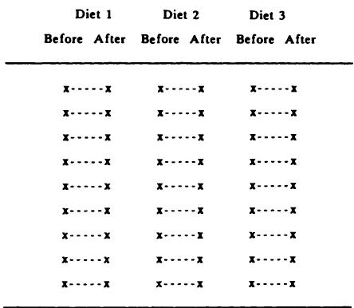

5 研究设计 5 Designing research
临床研究中，可能没有哪个方面像研究设计一样被忽视了。热切的年轻研究者们参加医学统计课程，学会了计算 值的各种方法，但却很少学习如何正确地组织一个临床研究项目。然而，严谨的研究设计是高质量临床研究的基础。
Probably no aspect of clinical research is as neglected as study design. Eager young investigators attend classes on medical statistics, find dozens of ways to compute values, but rarely learn how to organize a clinical research project properly. Yet careful study design is the foundation of quality clinical research.
Noller 和 Melton (1985)
Noller and Melton (1985)
正确进行研究的方法屈指可数，但错误进行研究的方法却有上千种。
There are only a handful of ways to do a study properly but a thousand ways to do it wrong.
Sackett (1986)
Sackett (1986)
5.1 引言 5.1 INTRODUCTION
所有医学研究都是围绕一个或多个目标进行的，这些目标应该聚焦研究的计划或设计。在某些情况下，有明确的最佳方法来推进，但更多时候，有多种合理的研究设计方式可供选择。设计的统计学方面主要涉及研究的结构和数据收集的所有方面，包括测量指标的选择及其频率。尽管本章涵盖的许多一般性问题适用于临床试验，但临床试验有许多特殊之处，将在第15章详细讨论。
All medical research is carried out in relation to one or more objectives, which should focus the plan or design of the research. In some cases there is a clear best way to proceed, but more often there is a choice of reasonable ways of designing a study. The statistical aspects of design relate mainly to the structure of the study and all aspects of the collection of data, including the choice of measurements to make and their frequency. Although many of the general issues covered in this chapter apply to clinical trials, these have many special features and are discussed in detail in Chapter 15.
研究可以粗略地分为观察性研究和实验性研究。在观察性研究中，我们收集一个或多个受试者群体的信息，但不采取任何措施影响他们。观察性研究可以是前瞻性的，即招募受试者并收集后续事件的数据；也可以是回顾性的，即收集过去事件的信息。观察性研究包括普查、调查、病例对照研究和队列研究；这些将在5.9至5.12节中讨论。
Research can be crudely divided into observational and experimental studies. In observational studies we collect information about one or more groups of subjects, but do nothing to affect them. Observational studies can be prospective, where subjects are recruited and data are collected about subsequent events, or retrospective, where information is collected about past events. Observational studies include censuses, surveys, casecontrol studies and cohort studies; they are considered in sections 5.9 to 5.12.
实验性研究是指研究者影响（控制）所有或部分个体所发生事件的研究。在人类、动物和实验室样本的研究中也会出现类似的问题，尽管本章的重点
Experimental studies are those in which the researcher affects (controls) what happens to all or some of the individuals. Similar problems arise in studies of humans, animals and laboratory samples, although the emphasis
是临床研究。5.4至5.8节将讨论实验性研究的设计。
in this chapter is on clinical studies. Sections 5.4 to 5.8 consider the design of experimental studies.
大多数研究旨在回答相当简单的问题，但这并不意味着它们只需要相当简单的设计。关键在于根据研究目标量身定制研究设计。如果没有充分的规划，研究者就不能指望得出有意义的结论。本章后面将讨论一些重要的通用设计原则。
Most studies aim to answer fairly simple questions but it does not necessarily follow that they require fairly simple designs. The key point is to tailor the research design to the study objective(s). Without adequate planning the researcher cannot expect to be able to make meaningful conclusions. Some important general principles of design are discussed later in this chapter.
在大多数研究中，我们希望将研究结果推广到一般人群。在这方面，有两个方面需要特别注意。首先，所研究的样本应具有代表性，能够代表感兴趣的总体；这尤其适用于观察性研究。其次，被比较的组应尽可能相似，除了直接感兴趣的特征之外；这尤其适用于实验性研究，如临床试验，但也与许多观察性研究相关，如病例对照研究。我将在下文再次讨论这些问题。
In most research we wish to extrapolate the results from a study to the population in general. There are two aspects that require particular attention in this respect. First, the sample(s) studied should be representative of the population(s) of interest; this applies especially to observational studies. Secondly, groups being compared should be as alike as possible apart from the features of direct interest; this applies particularly in experimental studies, such as clinical trials, but is also relevant in many observational studies, such as case- control studies. I return to these issues below.
研究设计可以说是统计学对医学贡献中最重要的方面。正是因为这个原因，50多年来，统计学家一直敦促医学研究者在研究的规划阶段，而不是分析阶段，就咨询他们。一项好的研究的数据可以通过多种方式进行分析，但再巧妙的分析也无法弥补研究设计中的问题。
Research design is arguably the most important aspect of the statistical contribution to medicine. It is for this reason that for over 50 years statisticians have been urging medical researchers to consult them at the planning stage of their study, rather than at the analysis stage. The data from a good study can be analysed in many ways, but no amount of clever analysis can compensate for problems with the design of a study.
5.2 研究设计类别 5.2 CATEGORIES OF RESEARCH DESIGN
研究设计可以通过几种方式进行分类，其中一些是：
Research designs can be classified in several ways, some of which are:
- 观察性或实验性；
- observational or experimental;
- 前瞻性或回顾性；
- prospective or retrospective;
- 纵向或横断面。
- longitudinal or cross-sectional.
这些术语将在下文解释。第一种分类与研究目的相关，而其他分类则描述了数据收集的方式。并非所有这些分类组合都可行，但大多数是可行的。
These terms are explained below. The first classification relates to the purpose of the study, while the others describe the way in which the data are collected. Not all combinations of these classifications are possible, but most are.
5.2.1 观察性或实验性 5.2.1 Observational or experimental
在观察性研究中，研究者收集感兴趣的属性或测量信息，但不影响事件。例如，一项旨在发现小儿听力障碍患病率的研究。观察性研究包括调查和大多数流行病学研究。相比之下，在实验性研究中，研究者
In an observational study the researcher collects information on the attributes or measurements of interest, but does not influence events. An example would be a study to discover the prevalence of hearing difficulties in small children. Observational studies include surveys and most epidemiological studies. By contrast, in an experimental study the researcher
有意影响事件并调查干预措施的效果。实验性研究包括临床试验和许多动物及实验室研究。一般来说，实验性研究比观察性研究能得出更强的推论。实验性研究通常用于组间比较；观察性研究也可以是比较性的，但它们通常本质上是描述性的。
deliberately influences events and investigates the effects of the intervention. Experimental studies include clinical trials and many animal and laboratory studies. In general stronger inferences can be made from experimental studies than from observational studies. Experimental studies are usually carried out to make comparisons between groups; observational studies may also be comparative, but they are often essentially descriptive.
5.2.2 前瞻性或回顾性 5.2.2 Prospective or retrospective
前瞻性研究和回顾性研究之间有明显的区别：前瞻性研究的数据是自研究开始后随时间向前收集的，而回顾性研究的数据则涉及过去的事件，可能从现有来源（如医院病历）或通过访谈获得。实验是前瞻性的，但观察性研究可以是前瞻性的，也可以是回顾性的。当然，可以获取回顾性数据来比较不同的治疗方法，例如不同类型的乳房切除术，但这样的研究不是实验，因为它不是在标准化条件下预先指定的。回顾性研究包括病例对照研究（参见第5.10节）。
There is a clear distinction between prospective studies, in which data are collected forwards in time from the start of the study, and retrospective studies, in which data refer to past events and may be acquired from existing sources, such as hospital notes, or by interview. Experiments are prospective, but observational studies may be prospective or retrospective. Of course, retrospective data can be obtained to compare different treatments, for example different types of mastectomy, but such a study would not be an experiment as it was not a pre- specified study performed under standardized conditions. Retrospective studies include case- control studies (see section 5.10).
5.2.3 纵向或横断面 5.2.3 Longitudinal or cross-sectional
纵向研究是那些调查随时间变化的研究，可能与干预有关。观察在不止一个场合进行，尽管在分析中可能并非所有观察都被使用。临床试验是纵向的，因为我们关注的是在某个时间点开始的治疗对后续时间点结果的影响。横断面研究是指个体只被观察一次的研究。大多数调查是横断面的，构建参考范围的研究也是如此。观察性研究可以是纵向的或横断面的，但实验通常是纵向的。
Longitudinal studies are those which investigate changes over time, possibly in relation to an intervention. Observations are taken on more than one occasion, although they may not all be used in the analysis. Clinical trials are longitudinal because we are interested in the effect of treatment commencing at one time point on outcome at a later time. Cross- sectional studies are those in which individuals are observed only once. Most surveys are cross- sectional, as are studies to construct reference ranges. Observational studies may be longitudinal or cross- sectional, but experiments are usually longitudinal.
还有一种“伪纵向”研究，其中每个受试者只被观察一次，但数据用于描述随时间的变化。例如，用于推导儿童横断面生长图表的研究和月经周期中激素水平的研究（参见第5.13节）。
There is also the 'pseudo- longitudinal' study in which each subject is seen at only one time, but the data are used to describe changes over time. Examples are studies to derive cross- sectional growth charts for children and studies of hormone levels during the menstrual cycle (see section 5.13).
5.2.4 相互关系总结 5.2.4 Summary of inter-relationships
图5.1总结了设计特征最可能组合。实验性研究和观察性研究之间有明显的区别：实验性研究几乎都是前瞻性和纵向的，而观察性研究可以是回顾性的或前瞻性的，也可以是横断面的或
Figure 5.1 summarizes the most likely possible combinations of design features. There is a clear distinction between experimental studies which are nearly all prospective and longitudinal, and observational studies which can be either retrospective or prospective and also either cross- sectional or

图5.1 研究设计类型。
Figure 5.1 Types of research design.
纵向研究。因此，本章后面将分别讨论实验研究和观察性研究。
longitudinal. For this reason experiments and observational studies are considered separately later in this chapter.
虽然可以构建更复杂的科研设计分类（Bailar et al., 1984），但图5.1描述了大多数研究的主要特征。
It is possible to construct more complex categorizations of research designs (Bailar et al., 1984), but Figure 5.1 describes the main features of most research studies.
到目前为止，关于设计的讨论都与宏观问题相关。以下各节将更详细地探讨设计，特别强调从样本到总体的统计推断的两个重要方面—样本的代表性和对所发现关联的解释。
So far discussion of design has related to broad issues. The following sections look at design in more detail with particular emphasis on two important aspects of statistical inference from the sample to the population - the representativeness of the sample and the interpretation of any associations found.
5.2.5 对照 5.2.5 Control
无论何种实验，都必须有一个对照组，即不施加实验操作的比较组。通常，说“让我们在一些患者身上尝试这种新疗法，看看会发生什么”在科学或伦理上是不可接受的。最好是有一个对照组，他们接受常规治疗（或以某种不同方式治疗），以便进行比较。如果我们想评估孕妇在怀孕期间计数胎动的好处，我们应该有一个同期对照组，即不计数胎动的母亲。这是评估医学新疗法或新程序的一个关键组成部分。
Whatever the experiment, it is essential to have a comparison, or control, group to which the experimental procedure is not applied. It is not usually scientifically or ethically acceptable to say 'Let's try this new treatment on some patients and see what happens'. It is far better to have a control group who are treated normally (or in some way differently), against which comparisons can be made. If we wish to evaluate the benefits of mothers counting fetal movements in pregnancy we should have a concurrent control group of mothers who do not count movements. This is a key component of the evaluation of new therapies or procedures in medicine.
在观察性研究中，对照也是可取的。如果我们询问视觉显示终端（VDT）使用者是否出现眼睛疲劳或背痛，我们也应该向一组不使用VDT的可比员工提出同样的问题。
Controls are also advisable in observational studies. If we ask users of visual display terminals (VDTs) if they get eye strain or backache, we should also ask the same questions of a group of comparable employees who do not use VDTs.
在每种情况下，对照组的存在都增强了从研究结果中可能得出的推断。然而，正如我将在下面讨论的，在观察性研究中选择合适的对照并不容易。
In each case the presence of the control group strengthens the inferences that may be made from the results of the study. However, as I shall discuss below, the choice of suitable controls in observational studies is not easy.
5.3 变异来源 5.3 SOURCES OF VARIATION
第3章和第4章都以关于变异性对统计方法重要性的评论开头。行为或对某种刺激（无论是烟草还是抗生素药物）的反应存在变异性是常态。正如第3章所述，一些变异来源可能是已知的或可疑的，但大部分仍无法解释。例如，我们知道有几个变量会影响出生体重，如妊娠期长度、胎儿性别、产次、母亲吸烟、海拔高度等，但包含这些信息的统计模型只能解释大约四分之一的出生体重变异性。虽然无疑还有其他尚未识别的因素导致变异性，但极不可能有任何重要因素仍未被识别。因此，大部分观察到的变异性必须被认为是无法解释的，我们称之为随机变异。大多数临床测量中都存在相当大的随机变异。对于某些测量，如体温，变异相对较小，但对于其他测量，如出生体重、血压或许多血清成分，则存在巨大的变异。当我们设计一项研究以比较各组在某种临床测量水平上的差异时，必须考虑到这种自然变异性。我们可以将这种随机变异性视为“背景噪声”，我们正试图在这种噪声中检测出感兴趣的某种效应或“信号”。这与在其他领域中使用的“信噪比”概念有很好的类比。如果结果测量具有高度变异性，我们将需要更大的研究才能检测出感兴趣的系统效应。另一种可以考虑的设计是，通过研究受试者内部相对于基线水平的变化来消除受试者间变异。
Chapters 3 and 4 both began with comments about the importance of variability to the statistical approach. Variability in behaviour or response to some stimulus, be it tobacco or an antibiotic drug, is the norm. As noted in Chapter 3, some sources of variability may be known, or suspected, but much remains unexplained. For example, we know several variables that affect birth weight, such as length of gestation, fetal sex, parity, maternal smoking, height above sea level, and so on, but statistical models incorporating such information explain only about a quarter of the variability in birth weight. While there are undoubtedly other factors not yet identified that contribute to the variability, it is most unlikely that any important factors remain unidentified. The bulk of the observed variability must therefore be considered unexplainable, which we call random variation. There is considerable random variation in most clinical measurements. For some, such as body temperature, there is relatively little variation, but for others, such as birth weight, blood pressure, or many serum constituents, there is enormous variation. When we are designing a study to compare groups with respect to levels of some clinical measurement, this natural variability must be borne in mind. We can think of this random variability as 'background noise', against which we are trying to detect some effect, or 'signal', of interest. There is a good analogy here with the concept of the 'signal to noise' ratio used in other fields. If the outcome measurement is highly variable we will need a larger study to be able to detect a systematic effect of interest. Another possible design to consider is that in which we remove between subject variation by studying within subject changes from a baseline level.
此外，个体在其他未直接研究但可能影响感兴趣变量的特征上也会表现出类似的变异。实验设计的许多原则旨在试图控制我们不感兴趣的变异，以便我们将注意力集中在我们感兴趣的变异上。这种普遍变异性对研究设计的两个相关后果是：
Further, individuals will exhibit similar variation in other characteristics not directly being studied but which might affect the variables of interest. Many of the principles of experimental design are aimed at trying to control variation that we are not interested in, so that we can focus our attention on the variability that we are interested in. Two consequences of this general variability relevant to the design of studies are:
- 需注意使样本具有人群代表性。
- Care is needed to make samples representative of the population.
- 在比较研究中，需注意使各组在已知变异来源方面保持相似。
- In comparative studies care is needed in making groups similar with respect to known sources of variation.
此外，我们需要记住，当感兴趣的测量指标变异性很高时，需要大样本才能获得可靠结果。
In addition, we need to bear in mind that when the measurement of interest is highly variable, large samples are needed to get reliable results.
这些问题将在下文讨论，首先是实验性研究，然后是观察性研究。然而，比较研究中计算合适样本量的方法在第15章给出，因为它们最常用于设计临床试验。
These issues are discussed below, firstly for experimental studies and then for observational studies. However, methods for calculating the appropriate sample size for comparative studies are given in Chapter 15. as they are most often used when designing clinical trials.
在详细探讨不同类型的实验设计之前，考虑一个能说明许多问题的真实研究案例会有所帮助。
Before examining different types of experimental design in detail it should help to consider a real study that illustrates many of the issues.
一个实验：双臂血压是否相同？ 79
An experiment: is the blood pressure the same in both arms？ 79
5.4 一个实验：双臂血压是否相同？ 5.4 AN EXPERIMENT: IS THE BLOOD PRESSURE THE SAME IN BOTH ARMS？
血压是一个变异性特别大的测量指标。它不仅在个体之间存在显著差异（对此我们有部分解释），而且在每个个体内部也随时间变化很大。存在显著的24小时节律性变异（昼夜节律变异）以及日间变异。此外，血压难以测量。近年来，新技术的发展使得通过手臂内的留置导管连接小型录音机实现血压的连续记录成为可能。动态血压监测提供的信息更丰富，因为它能提供24小时的数据，而且由于直接测量血压且无观察者误差，因此可能更准确。许多人将这种动脉内技术视为“金标准”，用以评估新方法，特别是间接（即无创）动态记录仪。由于上述变异性，使用两种设备同时测量并因此使用双臂进行测量非常重要。那么问题就来了，左右臂之间的血压是否存在系统性差异。
Blood pressure is a particularly variable measurement. Not only does it vary considerably between individuals, for which we have partial explanation, but it varies greatly over time for each individual. There is marked variation over 24 hours (circadian variation) as well as day- to- day variation. In addition, blood pressure is difficult to measure. In recent years new technology has been developed to allow continuous recording of blood pressure via an indwelling catheter in the arm linked to a small tape recorder. Ambulatory blood pressure monitoring is more informative, as it gives data for 24 hours, and also potentially more accurate as it measures blood pressure directly and without observer error. Many people regard this intra- arterial technique as the 'gold standard' against which to judge new methods, in particular indirect (i.e. non- invasive) ambulatory recorders. Because of the variability referred to it is important to take simultaneous measurements using the two devices, and thus to use both arms. The question then arises as to whether there might be any systematic difference in blood pressure between the left and right arms.
Gould 等人（1985）描述了一项旨在回答此问题的研究。其设计如下。用于测量血压的设备是“随机零点”血压计，这是一种旨在消除观察者偏倚的机器。（在观察到的读数上必须加上另一个直到事后才知道的“随机”量。）每个手臂都连接一个袖带，并且两个袖带都连接到同一个血压计。使用电动气泵使两个袖带的压力相等。显然，需要两名观察者—每只手臂一名。尽管使用了特殊的血压计，但重要的是观察者不能只测量一只手臂，以防观察者之间存在系统性差异。因此，每位观察者必须对左臂和右臂各进行一半的观察，并且认为每位观察者测量每位患者的双臂是合理的（尽管不是必需的）。类似的论点也适用于两个袖带，它们可能略有不同。因此，每个袖带都必须平等地应用于每只手臂，并且再次为每位患者执行此操作。鉴于血压的已知变异性，决定每位观察者使用每个袖带对每位患者的每只手臂进行两次测量，从而每位患者获得16次测量。最后，患者的血压在系列测量过程中可能存在系统性变化的趋势。因此，袖带应用于手臂的顺序以及观察者测量双臂的顺序通过随机化进行改变。随机化的详细解释见5.7节。观察者之间没有结果交流。
A study to answer this question was described by Gould et al. (1985). The design was as follows. The equipment used to measure the blood pressure was a 'random zero' sphygmomanometer, a machine designed to remove observer bias. (To the reading observed must be added another 'random' quantity not known until afterwards.) A cuff was attached to each arm, and both were connected to the same sphygmomanometer. An electric air pump was used to equalize the pressure to the two cuffs. Clearly it was necessary to have two observers - one to each arm. Despite the use of a special sphygmomanometer it was important that the observers did not measure only one arm in case there was a systematic difference between the observers. Thus each observer had to take half of the observations on the left arm and half on the right, and it was felt sensible (although it was not essential) for each observer to measure both arms of each patient. A similar argument applied to the two cuffs, which might have been slightly different. Thus each cuff had to be applied equally to each arm and again this was carried out for each patient. In view of the known variability of blood pressure it was decided that each observer would take two measurements using each cuff on each arm of each patient, giving 16 measurements per patient. Finally, there might have been a tendency for a patient's blood pressure to change systematically during the series of measurements. Thus the order in which the cuffs were applied to the arms and the order in which the observers measured the two arms was varied using randomization. A detailed explanation of randomization is given in section 5.7. There was no communication of results between observers.
该研究在91名原发性高血压受试者身上进行。
The study was carried out on 91 subjects with essential hypertension.
上述设计旨在尽可能纯粹地比较左右臂的血压。此外，还记录了每只手臂的周长，并记录了每个受试者测量时的顺序。这项研究阐释了实验设计的许多特点，其中一些将在5.5节中更详细地讨论：
The above design was used to try to get as pure a comparison as possible of the blood pressure in the left and right arms. In addition the circumference of each arm was recorded, and a record was kept of the order in which the measurements were taken for each subject. This study illustrates many features of the design of an experiment, some of which will be discussed in more detail in section 5.5:
观察者数量 每位受试者需要有两名观察者，但即使并非必要，拥有多于一名观察者通常也是个好主意，因为它允许量化观察者之间的差异（参见14.2节）。
Number of observers It was necessary to have two observers per subject, but it is often a good idea to have more than one observer even when it is not necessary, as it allows the differences between observers to be quantified (see section 14.2).
重复测量 在每种实验条件组合下进行不止一次读数是可取的，因为它能为估计感兴趣的效应提供更高的精确度。然而，重复测量需要是独立的读数。在手臂比较研究中，它们是独立的，因为所使用的机器类型意味着观察者不知道他们之前的测量结果。
Replicated measurements It is desirable to take more than one reading in each combination of experimental conditions as it gives greater precision for estimating the effects of interest. The replicates need to be independent readings, however. They were independent in the arm comparison study because the type of machine used meant that the observers did not know what their previous measurement was.
平衡设计 并非必须对每种实验因素组合进行相同数量的观察，但如果一切都平衡，如上述研究所示，分析将大大简化。
Balanced design It is not essential that the same number of observations is taken for each combination of experimental factors, but if everything is balanced, as in the above study, the analysis is very much simpler.
随机化 针对每位患者，观察者和袖带分配到两只手臂的顺序是随机确定的。随机化是实验设计的关键要素之一。
Randomization The order in which the observers and cuffs were allocated to the two arms for each patient was determined at random. Randomiza tion is one of the key elements of experimental design.
协变量 有时需要记录非实验性特征（协变量），因为它们可能影响结果。它们可能随观察而变化，例如环境温度，也可能仅随受试者而变化，例如年龄。在这项研究中，手臂周长被认为是一个可能的协变量，因为它影响袖带的贴合度。手臂周长介于所给的两个例子之间，在受试者内部（即手臂之间）变化，但不会随观察而变化。另一个潜在的协变量是观察顺序。该设计是随机化和平衡的，因为预计记录的血压会随着重复测量而下降。然而，在分析中可以考虑测量的顺序以提高精确度。
Covariates Sometimes there are non- experimental features (covariates) that need to be recorded as they might have affected the results. While they may vary from observation to observation, such as ambient tem perature, they may vary only from subject to subject, such as age. In this study arm circumference was considered to be a possible covariate as it affects the fit of the cuff. Arm circumference is intermediate between the two examples given, varying within subject (i.e. between arms) but not from observation to observation. Another potential covariate was the order of observations. The design was randomized and balanced because it was anticipated that recorded blood pressure would fall over repeated measure ments. However, it is possible to take account of the order of measure ments in the analysis to improve precision.
样本量 采用了大样本量，以提供左右臂之间差异的精确估计。
Sample size A large sample was taken to provide a precise estimate of the difference between the arms.
5.5 实验设计 5.5 THE DESIGN OF EXPERIMENTS
实验应设计得尽可能简单明了，以回答感兴趣的问题。在设计实验时，考虑数据
An experiment should be designed to answer the question of interest as simply and clearly as possible. It is important to consider the way the data
将如何分析非常重要，因为这可以避免后续的复杂性。本章概述了实验。第15章深入探讨了临床试验，因为其中涉及许多特殊问题。
will be analysed when designing an experiment as this can save complications later. This chapter considers experiments in general. Chapter 15 considers clinical trials in depth, as there are many special issues involved.
在本节中，我将讨论在实验设计时需要考虑的一些更重要的方面。
In this section I discuss some of the more important aspects to consider when designing an experiment.
5.5.1 偏倚 5.5.1 Bias
任何研究，无论是实验性研究还是观察性研究，都旨在回答一个或多个具体问题。结果的可靠性以及对研究发现的解释至关重要。实验提供了获取真相的最佳机会，但应采取一些预防措施以确保结果不出现偏倚。例如，在比较性实验中，如手臂比较研究，重要的是被比较的观察组在除实验者操纵的因素之外的所有方面都具有可比性。手臂比较研究的几个设计特点就是出于这个原因。
Any study, whether experimental or observational, will be set up to answer one or more specific questions. The reliability of the results, and thus the interpretation of the findings, is crucial. An experiment provides the best opportunity to get at the truth, but there are several precautions that should be taken to ensure that the results are not biased. For example, in a comparative experiment, such as the arm comparison study, it is important that the groups of observations being compared are comparable in all aspects other than that being manipulated by the experimenter. Several of the design features of the arm comparison study were included for this reason.
偏倚可能通过研究中结构性缺陷而发生。例如，如果一名观察者测量了左臂的所有数据，而另一名观察者测量了右臂的所有数据，那么手臂间的差异将无法与观察者间的任何差异区分开来，这种效应称为混杂。事实上，这项研究的开展正是为了探究当比较不同机器时（每只手臂使用一台机器）是否会发生混杂。确保在第1、第2、第3和第4次测量中，不同观察者-手臂-袖带组合被同等使用，是避免偏倚的另一个例子。
Bias can occur through structural deficiencies in a study. For example, if one observer had taken all measurements on the left arm and the other all those on the right arm, the between arm differences would have been inseparable from any between observer differences, an effect called confounding. In fact, that study was carried out expressly to see if there would be confounding when different machines were compared one to an arm. Making sure that the different observer- arm- cuff combinations were used equally in the 1st, 2nd, 3rd and 4th orders is another example of avoiding bias.
5.5.2 随机化 5.5.2 Randomization
一个重要的潜在偏倚来源是受试者在非设计特征上的变异。例如，如果我们只在一组患者中测量左臂的血压，而在另一组中只测量右臂的血压，那么观察到的左右臂之间的平均差异可能会受到组间在任何与血压相关的变量（如年龄）上的差异的影响。显然，在同一患者身上使用双臂更好，但在大多数研究中，程序或治疗不能施用于同一个人。这里常用的方法是随机分配治疗给患者。如第5.7节所述，随机一词具有特定的统计学含义。随机分配是实验设计的基本原则之一。另一种方法是找到特征非常相似的受试者对，然后随机分配治疗给匹配的配对。匹配将在第5.8节中讨论。
An important possible source of bias is the way in which subjects vary in features that are not part of the design. For example, if we had measured blood pressure in the left arm only in one group of patients and in the right arm only in another group, then the average difference observed between left and right arms could be affected by differences between the groups with respect to any variable related to blood pressure, such as age. Clearly it is better to use both arms in the same patients, but in most studies the procedures or treatments cannot be given to the same individuals. The usual approach here is to allocate treatments to patients at random. As described in section 5.7, the word random has a specific statistical meaning. Random allocation is one of the fundamental principles of experimental design. Another device is to find pairs of subjects with closely similar characteristics and allocate treatments to the matched pair at random. Matching is discussed in section 5.8.
在手臂比较研究中，观察者测量左右臂的顺序以及使用两个袖带的顺序都进行了随机化。没有特定的理由预期会产生偏倚，例如，观察者1总是从左臂开始，但使用随机排序是为了防止可能出现的微妙未知效应。
In the arm comparison study the order in which the observers measured the left and right arms and the order of use of the two cuffs were randomized. There was no specific reason to expect a bias from, for example, observer 1 always starting on the left arm, but random ordering was used as a safeguard against possible subtle unknown effects.
5.5.3 盲法 5.5.3 Blinding
偏倚也可能通过潜意识效应发生。例如，观察者的判断可能受到了解受试者正在接受的治疗的影响，或者受到了解该受试者先前测量结果的影响。后一个问题在手臂比较研究中通过选择血压测量机器得以避免。前一个问题在临床试验中尤为相关，在临床试验中，最好让患者和评估者都不知道所给予的治疗，这种程序称为盲法（参见第15章）。
Bias can also occur through subconscious effects. For example, observers' judgements may be affected by knowing the treatment that a subject is getting, or by knowledge of a previous measurement for that subject. The latter problem was avoided in the arm comparison study by the choice of blood pressure measuring machine. The former problem is especially relevant in clinical trials, where it is desirable to keep both patients and assessors in ignorance of the treatment given, a procedure known as blinding (see Chapter 15).
5.5.4 重复 5.5.4 Replication
对于变异性大或难以精确测量的指标，对每个个体进行多次测量可能很有用。这些重复测量在分析中可以作为独立的观察值处理，这可能会使分析更复杂，但能更大程度地发现感兴趣的效应。这种分析只有在重复测量相互独立的情况下才有效，而如果观察者知道他们第一次测量得到的结果，情况往往并非如此。
For measurements that are highly variable or difficult to measure accurately it may be useful to take more than one measurement on each individual. These replicates can be treated in the analysis as separate observations, which may make the analysis more complicated but gives greater potential to detect effects of interest. This analysis is only valid if the replicates are independent, which is often not the case if the observer knows what measurement they obtained the first time.
更常见的是，分析中会使用重复测量的平均值。后一种方法可能反映了临床实践—一些“噪音大”的变量，如血压、峰值呼气流速和超声测量，通常会重复进行。
More often the average of the replicates is used in the analysis. This latter approach may mirror clinical practice - some 'noisy' variables such as blood pressure, peak expiratory flow rate, and ultrasound measurements are usually repeated.
5.5.5 样本选择 5.5.5 Sample selection
研究中的样本总是希望能够代表目标人群，但这在实验中不如在观察性研究中那么重要。例如，手臂差异研究中样本的选择不太可能影响结果。更重要的是要确保被比较的亚组尽可能相似。
It is always desirable for the sample in a study to be representative of the population of interest, but this is not as important in experiments as in observational studies. For example, it is unlikely that the choice of the sample for the arm difference study would have affected the results. It is much more important to ensure that the sub- groups being compared are as similar as possible.
尽管原则上，代表性样本最好通过从总体中随机选择获得，但这种理想在实践中几乎从未实现。然而，样本应选择得尽可能与相关总体相似，因此，能够描述样本是如何选择的至关重要。
Although in principle representative samples are best obtained by random selection from the population, this ideal is virtually never met in practice. However, the sample should be chosen to be as similar as possible to the relevant population, so it is essential to be able to describe just how the sample was chosen.
这些考虑对于大多数动物实验可能不相关。
These considerations are probably irrelevant for most animal experiments.
5.5.6 样本量 5.5.6 Sample size
对抗变异性的另一种方法是增加样本量。更大的样本使我们能够更精确地评估感兴趣的效应。确定合适的样本量在临床试验中最为常见，第15.3节描述了在比较研究中选择合适样本量的正式方法。类似的原则适用于所有研究，但方法可能很复杂，因此需要专家协助。
Another way of combating variability is to increase the sample size. Larger samples enable us to evaluate effects of interest more precisely. The determination of an appropriate sample size is most common in clinical trials and section 15.3 describes formal methods for choosing an appropriate sample size in comparative studies. Similar principles apply to all studies, but the methods can be complicated so expert assistance is required.
5.6 实验的结构 5.6 THE STRUCTURE OF AN EXPERIMENT
在像手臂比较研究这样的设计实验中，研究者可能会控制几个条件（称为因素）。绘制图表来展示设计结构可能会有所帮助。除了澄清设计之外，图表还将显示数据应如何分析。
In a designed experiment such as the arm comparison study there may be several conditions (called factors) being controlled by the investigator. It may be helpful to draw a diagram to show the structure of the design. As well as clarifying the design the diagram will show how the data should be analysed.
一个简单的例子是比较三组受试者分别接受不同镇痛剂治疗偏头痛的实验。图5.2展示了这种设计的简单结构。每个x代表一个观察值。在这种设计中，三组受试者无需大小相等，但在更复杂的设计中，相等的大小是高度理想的。如果研究设计
A simple example is an experiment to compare three separate groups of subjects given different analgesics to combat migraine. Figure 5.2 shows the simple structure of this design. Each x denotes an observation. In this design there is no need for the three groups to be of equal size but in more complicated designs equal sizes are highly desirable. If the study design
图5.2 比较接受镇痛剂A、B或C的三组受试者的研究结构。每个x表示一名受试者。
Figure 5.2 Structure of a study to compare three groups of subjects receiving analgesics A, B or C. Each x indicates one subject.
如果研究设计改为每个受试者以随机顺序接受所有三种镇痛剂，则设计将如图5.3所示。这里，同一受试者的观察值之间用线连接。
were changed so that each subject received all three analgesics in random order, the design would be as shown in Figure 5.3. Here observations on the same subject are connected.
一项研究可能结合这两种特征，即受试者被检查不止一次，但不同组的受试者接受不同的治疗。例如，我们可能希望比较受试者在不同饮食前后的体重；图5.4显示了相应的设计。图5.2至图5.4说明了受试者内比较（within subject comparison）和受试者间比较（between subject comparison）之间的重要区别。
A study may combine both these features, so that subjects are examined more than once but different groups of subjects are treated differently. For example, we may wish to compare subjects' weights before and after different diets; Figure 5.4 shows the appropriate design. Figures 5.2 to 5.4 illustrate the important distinction between within subject and between subject comparisons.
比较左右臂血压的研究更为复杂。有三个因素—手臂、观察者和袖带—并且对每种组合都进行了两次测量（重复）。这项研究的设计如图5.5所示，被称为析因设计（factorial design），因为它使用了所有因素的组合。
The study comparing blood pressure in the left and right arms was more complicated. There were three factors - arms, observers and cuffs - and two measurements (replicates) were taken for each combination. The design of this study, which is shown in Figure 5.5, is known as a factorial design as all combinations of factors are used.
在任何给定情况下，都无法说出最佳设计是什么。选择要控制的因素、哪些因素是受试者间因素、哪些是受试者内因素，以及每个受试者需要进行多少次观察，这些都很难决定，通常需要深思熟虑才能得出令人满意的设计。在这个阶段，专业的统计学帮助尤其宝贵。设计中的任何弱点都无法在后期弥补。
It is not possible to say what the best design is in any given circumstance. The choice of factors to control, which factors are between subject and which within, and how many observations to take for each subject is difficult, and it will often take much thought to arrive at a satisfactory design. Expert statistical help is particularly valuable at this stage. Any weaknesses in the design cannot be rectified later.

图5.3 比较一组受试者中三种治疗的研究结构。线连接同一受试者的观察值，这些观察值以随机顺序进行。
Figure 5.3 Structure of a study to compare three treatments in one group of subjects. Lines join observations on the same subject, which are made in random order.

图5.4 比较两组受试者治疗前后测量值的研究结构。
Figure 5.4 Structure of a study to compare two groups measured before and after treatment.

图5.5 比较左右臂血压研究的结构—一个三向析因设计。
Figure 5.5 Structure of the study to compare blood pressure in the left and right arms - a three way factorial design.
5.7 随机分配 5.7 RANDOM ALLOCATION
本章前面已多次提及随机分配。本节将讨论实验研究中随机化的原理和方法。
There have been several mentions of random allocation earlier in this chapter. The rationale for and methods of randomization in experimental studies are discussed in this section.
采用随机化主要有两个原因。第一个原因是防止偏倚。如前所述，我们希望在各组之间比较治疗效果，而这些组在任何系统性方面都不应存在差异。如果受试者接受由研究者（或受试者本人）选择的治疗，则很可能产生偏倚—通常是潜意识的，但偶尔也可能是故意的。我们可以通过对受试者进行治疗分配来避免这种可能性，即
There are two main reasons for using randomization. The first reason is to prevent bias. As noted earlier, we want to compare treatments between groups which do not differ in any systematic way. If subjects receive treatments chosen by the investigator (or indeed the subject) there is the likelihood of bias arising - usually subconscious but occasionally intentional. We can avoid this possibility by allocating treatments to subjects at
随机分配。关于临床试验中此问题的进一步讨论，请参见15.2.2节。
random. There is further discussion of this issue with regard to clinical trials in section 15.2.2.
偏倚也可能通过未知效应产生。例如，当对每个受试者使用两种或更多种治疗（或实验条件）时，建议随机化它们应用于每个受试者的顺序，以防存在与时间或测量顺序相关的任何未知偏倚。这一论点是手臂比较研究中测量顺序随机化的原因。
Bias can also arise through unknown effects. For example, when two or more treatments (or experimental conditions) are used for each subject it is advisable to randomize the order in which they are applied to each subject in case there is any unknown bias associated with time or the order of measurements. This argument was behind the randomization of the order of measurements in the arm comparison study.
随机化的另一个原因是统计理论是基于随机抽样的思想。在一项采用随机分配的研究中，治疗组之间的差异表现得像随机样本之间的差异。如第4章所述，我们知道随机样本的行为方式，因此可以将观察结果与预期进行比较，例如假设治疗效果相同。
The other reason for randomizing is that statistical theory is based on the idea of random sampling. In a study with random allocation the differences between treatment groups behave like the differences between random samples. As noted in Chapter 4, we know how random samples are expected to behave, and so can compare the observations with expectation, for example assuming that the treatments are equally effective.
5.7.1 简单随机化 5.7.1 Simple randomization
人们并非总是能理解“随机”与“随意”并非同义。随机分配是指每位患者获得每种治疗的概率是已知的，通常是均等的，但具体将获得哪种治疗是无法预测的。因此，将两种治疗交替分配给一系列患者并非随机分配。最简单的随机分配方法是抛硬币—正面为治疗A，反面为治疗B。一种等效的方法是使用随机数表，例如表B13中的随机数表。在这些表中，每个数字出现的频率相同，并且顺序是随机的，因此完全不可预测。另一种选择是在计算机上使用随机数生成器。
It is not always appreciated that random does not mean the same as haphazard. By random allocation we mean that each patient has a known chance, usually an equal chance, of being given each treatment, but the treatment to be given cannot be predicted. Thus alternately allocating two treatments to a series of patients is not random allocation. The simplest method of random allocation is tossing a coin - heads is treatment A, tails is treatment B. An equivalent method is to use a table of random numbers, such as that in Table B13. In these tables each number occurs equally often, and the ordering is random, and so completely unpredictable. Another option is to use a random number generator on a computer.
第一步是确定随机数与不同实验组之间的对应关系。例如，如果我们要使用表B13将两种治疗均等地分配给受试者，我们可以将奇数表示一种治疗，偶数表示另一种治疗。然后我们必须选择一个起始位置，这可以通过使用大头针或某种同样任意的方法来完成。此外，我们还可以选择读取表格的方向。
The first step is to decide the correspondence between the random numbers and the different experimental groups. For example, if we wish to allocate equally two treatments to subjects using Table B13 we could take odd numbers to indicate one treatment and even numbers to indicate the other. We must then choose a place to start, and this can be done using a pin or some equally arbitrary method. In addition we can choose the direction in which to read the table.
假设从我们的起始位置开始，表中前两位数字是
Suppose that the first two digit numbers in the table from our starting place are
12 19 20 52 81 30 74 93 02 67 41 50 等。
12 19 20 52 81 30 74 93 02 67 41 50, etc.
如果我们用奇数代表治疗A，偶数代表治疗B，那么这些数字表示的序列是
If we take odd numbers for treatment A and even numbers for treatment B, then these numbers indicate the sequence
BABBABBABAAB
BABBABBABAAB
前12名受试者。或者，我们可以单独取每个数字，得到
for the first 12 subjects. Alternatively we could take each digit on its own. to give
ABAABBABBAABABAABBBABAAB
ABAABBABBAABABAABBBABAAB
前24名受试者。第三种方法是，将00到49的数字分配给A，50到99的数字分配给B，还有无数种其他可能的策略。使用哪种方法都没有区别。
for the first 24 subjects. A third approach would be to take numbers 00 to 49 for A and 50 to 99 for B, and there are countless other possible strategies. It makes no difference which is used.
我们可以很容易地将最后一种方法推广到有两种以上治疗或实验条件的情况。例如，我们可以对三个组使用以下方案：
We can easily generalize the last approach to situations with more than two treatments or experimental conditions. For example, we could use the following scheme for three groups:
01到33：治疗A
01 to 33: treatment A
34到66：治疗B
34 to 66: treatment B
67到99：治疗C
67 to 99: treatment C
00：忽略
00 : ignored
对于其他设计也是如此。请注意，在序列的任何时刻，分配给每种治疗的患者数量都可能不同。我们有时希望在任何时候都使每组中的数量非常接近，这可以通过区组随机化实现。此外，简单随机化将每组受试者特征的分布完全交由机会决定。我们通常知道或怀疑某些受试者的行为会有所不同，例如，他们可能有不同的预后，因此希望在不同的治疗组中，这些类别内的数量保持相似。我们可以通过分层随机化或最小化来实现这一点。这些技术将在下文详细描述。显然，很容易调整上述方法以进行加权随机化，从而导致不同组中的数量不相等。例如，我们可以通过将01到66分配给A，将67到99分配给B，从而以2比1的比例分配治疗A和B。
and similarly for other designs. Notice that at any point in the sequence the numbers of patients allocated to each treatment will probably differ. We sometimes wish to keep the numbers in each group very close at all times, which we can achieve by block randomization. Further, with simple randomization the distribution of the characteristics of the subjects in each group is left completely to chance. We often know or suspect that some subjects will behave differently, for example they may have different prognoses, and so it is desirable to keep the numbers within these classes similar in the different treatment groups. We can achieve this by stratified randomization or minimization. These techniques are all described below.Clearly it is very easy to adapt the above method to give a weighted randomization, leading to unequal numbers in the different groups. For example, we could allocate treatments A and B in proportions 2 to 1 by using 01 to 66 for A and 67 to 99 for B.
显然，很容易调整上述方法以进行加权随机化，从而导致不同组中的数量不相等。例如，我们可以通过将01到66分配给A，将67到99分配给B，从而以2比1的比例分配治疗A和B。
Clearly it is very easy to adapt the above method to give a weighted randomization, leading to unequal numbers in the different groups. For example, we could allocate treatments A and B in proportions 2 to 1 by using 01 to 66 for A and 67 to 99 for B.
5.7.2 区组（或限制性）随机化 5.7.2 Block (or restricted) randomization
区组（或限制性）随机化用于使不同组中的受试者数量始终保持紧密平衡。例如，如果我们一次考虑四个受试者为一个区组，那么我们可以通过六种方式分配治疗，使得两名受试者接受A，两名接受B：
Block (or restricted) randomization is used to keep the numbers of subjects in the different groups closely balanced at all times. For example, if we consider subjects in blocks of four at a time, there are six ways in which we can allocate treatments so that two subjects get A and two get B:
1 AABB 4 BBAA 2 ABAB 5 BABA 3 ABBA 6 BAAB
1 AABB 4 BBAA 2 ABAB 5 BABA 3 ABBA 6 BAAB
如果我们只使用这六种治疗分配方式的组合，那么在任何时候，两组中的数量差异永远不会超过
If we use combinations of only these six ways of allocating treatments then the numbers in the two groups at any time can never differ by more than
两个，并且它们通常会相同或相差一个。我们随机选择区组来创建分配序列。使用之前以
two, and they will usually be the same or one apart. We choose blocks at random to create the allocation sequence. Using the previous random sequence beginning
121920528130749302674150
开头的随机序列，我们可以省略范围1到6之外的数字，得到
we can omit those numbers outside the range 1 to 6 to get
12122134326415
由此我们可以构建区组分配序列
from which we can construct the block allocation sequence
AABB ABAB AABB ABAB ABAB AABB ABBA ABBA
AABB ABAB AABB ABAB ABAB AABB ABBA ABBA
等等。请注意序列中看似非随机的开头—121221—其中只出现了六个数字中的两个。随机数列表总是会产生像这样的特殊序列—如果它们不是这样，它们就不是随机的。检查表B13会发现许多这样的序列。
and so on. Notice the apparently non- random beginning of the sequence - 121221 - in which only two of the six numbers appear. Lists of random numbers always throw up peculiar sequences like this one - they would not be random if they did not. Inspection of Table B13 shows many such sequences.
随机区组可以是任何大小，但使用治疗数量的倍数更合乎逻辑。最好避免使用大区组，因为它们对平衡的控制较差。在临床试验中，将随机化序列对实际施予治疗的人员保密是非常必要的。这通常通过创建一堆不透明的、编号的密封信封来实现，每个信封中包含一名患者的分配信息。即便如此，如果知道正在使用受限随机化，就有可能提前推断出每第四名患者将接受的治疗。因此，最好让随机数的使用者不知道序列是如何构建的，并且可能也需要随机改变区组长度，例如混合使用大小为2、4或6的区组。当治疗方案多于两种时，也采用类似的方法。例如，对于三种治疗方案，可以使用大小为3、6或9的区组。显然，这些考虑不适用于动物实验或人体样本的实验室实验。
Randomized blocks can be of any size, but using a multiple of the number of treatments is more logical. Large blocks are best avoided as they control balance less well. In clinical trials it is highly desirable for the randomization sequence to be kept hidden from those actually giving the treatments. This is often achieved by creating a pile of opaque numbered sealed envelopes each containing the allocation for one patient. Even so, with the knowledge that restricted randomization is being used, it is possible to deduce in advance the treatment to be given to every fourth patient. For this reason it is better for the users of the random numbers not to know how the sequence was constructed, and it may also be desirable to vary the block length, again at random, perhaps using a mixture of blocks of size 2, 4, or 6. A similar approach is used when there are more than two treatments. For example, blocks of size 3, 6, or 9 can be used for three treatments. Obviously these considerations do not apply to experiments on animals or laboratory experiments on human samples.
关于临床试验中治疗分配相关问题的进一步讨论，请参见第15.2节。
There is further discussion in section 15.2 of the problems associated with treatment allocation in clinical trials.
5.7.3 分层随机化 5.7.3 Stratified randomization
虽然简单随机化消除了分配过程中的偏倚，但它不能保证，例如，每组受试者的年龄分布相似。事实上，在小型研究中，很可能出现一些偶然的不平衡，这可能会使结果的解释复杂化。即使在超过100名受试者的研究中，也可能偶然出现一些显著的变异，特别是对于那些相当罕见的特征。在许多临床研究中，事先已知某些亚组的
While simple randomization removes bias from the allocation procedure, it does not guarantee, for example, that the subjects in each group have similar age distributions. Indeed in small studies it is highly likely that some chance imbalance will occur, which might complicate the interpretation of results. Even in studies with over 100 subjects there may be some substantial variations by chance, especially for characteristics that are quite rare. In many clinical studies it is known beforehand that subgroups of
患者对治疗的反应预计会有所不同。在这种情况下，建议确保接受每种治疗的受试者具有相似的特征。
patients are expected to respond differently to treatment. Here it is advisable to ensure that the subjects receiving each treatment have similar characteristics.
我们可以使用分层随机化来在不牺牲随机化优势的情况下，实现重要特征的近似平衡。该方法是为每个亚组（层）生成一个单独的区组随机化列表。例如，在一项比较两种乳腺癌替代治疗方案的研究中，按绝经状态进行分层将非常重要。应获得两份单独的随机数列表，从中可以为绝经前和绝经后女性准备两堆单独的密封信封。分层治疗分配必须基于每个层内的区组随机化，而不是简单随机化；否则将无法控制层内治疗的平衡，从而分层的目的将无法实现。
We can use stratified randomization to achieve approximate balance of important characteristics without sacrificing the advantages of randomization. The method is to produce a separate block randomization list for each subgroup (stratum). For example, in a study to compare two alternative treatments for breast cancer it would be important to stratify by menopausal status. Two separate lists of random numbers should be obtained, from which two separate piles of sealed envelopes can be prepared, for premenopausal and postmenopausal women. It is essential that stratified treatment allocation is based on block randomization within each stratum rather than simple randomization; otherwise there will be no control of balance of treatments within strata, and so the object of stratification will be defeated.
分层随机化可以扩展到两个或更多分层变量。例如，我们可能希望将乳腺癌试验中的分层扩展到肿瘤大小和阳性淋巴结数量。我们必须为每个类别组合生成一个单独的随机化列表。如果我们有两个肿瘤大小组（例如 和 ）和三个淋巴结受累组 ，以及绝经状态，那么我们有 个层，这可能超出实际可行的限制。多层还存在一个额外的问题，即某些类别组合可能很少见，以至于使用区组随机化所预期的治疗平衡并未发生。
Stratified randomization can be extended to two or more stratifying variables. For example, we might wish to extend the stratification in the breast cancer trial to tumour size and number of positive nodes. We have to produce a separate randomization list for each combination of categories. If we had two tumour size groups (say and ) and three groups for node involvement as well as menopausal status, then we have strata, which may exceed the limit of what is practical. There is the further problem with multiple strata that some of the combinations of categories may be rare, so that the treatment balance expected from the use of block randomization does not occur.
应仔细考虑用于分层的变量，将选择限制在已知具有重要预后意义的变量。许多试验使用年龄和性别进行分层。虽然年龄通常已知具有预后作用，但性别通常不具有预后作用，因此无需用于分层。
Some thought should be given to which variables are used for stratification, restricting the choice to variables known to be prognostically important. Many trials stratify using age and sex. While age is frequently known to be prognostic, sex is often not prognostic and need not be used for stratification.
在多中心研究中，除非有中央协调的随机化服务，否则每个中心内的患者都需要单独随机化。因此，“中心”是一个分层变量，并且可能还有其他分层变量。
In a multicentre study the patients within each centre will need to be randomized separately unless there is a central coordinated randomizing service. Thus 'centre' is a stratifying variable, and there may be other stratifying variables as well.
在小型研究中，对多于一个或可能两个变量进行分层是不切实际的，因为分层数量很快就会接近受试者数量。当对于多个变量来说，实现治疗组之间的高度相似性确实很重要时，可以使用最小化方法（参见第5.8节）。
In small studies it is not practical to stratify on more than one or perhaps two variables, as the number of strata can quickly approach the number of subjects. When it is really important to achieve close similarity between treatment groups for several variables minimization can be used (see section 5.8).
5.7.4 随机化的其他用途 5.7.4 Other uses of randomization
在一些研究中，将治疗分配给个体受试者要么不可能要么不切实际。假设我们希望评估
In some studies it is either impossible or impractical to allocate treatments to individual subjects. Suppose that we wish to evaluate the effectiveness of
电视或报纸上的健康教育活动的有效性，以提高对毒品危害的认识，或确实改变行为。我们不能随机针对个体，而是可以随机分配整个区域以接受不同的媒体报道。如果有大量的小区域，这种整群随机化应该能给出可靠的结果，但如果区域数量少且面积很大，如所给例子中可能的情况，则在确保区域可比性方面存在问题。在这种情况下，在研究开始前获取基线数据很有价值，以便比较研究期间区域内的变化。实验研究中有时使用的其他群组包括学校、医院和家庭。
a health education campaign on television or in the newspapers to increase awareness of the dangers of drugs, or indeed to change behaviour. We cannot target individuals at random, but rather we can randomly assign whole areas to receive different media coverage. With a large number of small areas this cluster randomization should give reliable results, but with a small number of very large areas, as would be likely in the example given, there are problems in ensuring the comparability of the areas. Here it is valuable to obtain baseline data before the study starts so that changes within areas over the time of the study can be compared. Other clusters sometimes used in experimental research are schools, hospitals and families.
与个体治疗比较一样，对区域进行的随机研究将比非随机研究给出更可靠的结果，但随机化通常是不可能的。关于美国饮用水氟化与癌症之间可能关联的大部分争议，是由于有氟化物或没有氟化物的区域的特征不同所致。
As with treatment comparisons on individuals, randomized studies on areas will give more reliable results than non- randomized studies, but randomization is often impossible. Much of the controversy over the possible association between the fluoridation of drinking water and cancer in the United States was due to the different characteristics of areas which did or did not have fluoride.
随机化在实验中也可以通过其他方式使用。在手臂比较研究中，两名观察者和两个袖带在每只手臂上使用的顺序是随机化的，以防存在某种系统性顺序效应。在可能存在某种系统性不良效应（即偏倚）的情况下，使用平衡随机化是一个好主意。如果结果证明没有这种效应，也不会造成任何损害。
Randomization can also be used in other ways in experiments. In the arm comparison study the order in which the two observers and two cuffs were used on each arm was randomized in case there was some systematic order effect. It is a good idea to use balanced randomization in situations where there is the possibility of some systematic unwanted effect (that is, a bias). No harm will be done if it turns out that there was no such effect.
在动物实验中也建议使用随机化（Gart 等，1986）。例如，如果小鼠要接受两种或更多种不同治疗中的一种，最好一次选择一只，并使用随机序列来确定治疗。先从笼中取出和最后剩下的动物之间可能存在体型差异（Festing，1981）。不同笼子中的动物之间也可能存在系统性差异，因此每个笼子都应包含一些接受每种治疗的动物。
It is also advisable to use randomization in animal experiments (Gart et al., 1986). For example, if mice are to be given one of two or more different treatments it is best to select them one at a time and use a random sequence to determine the treatment. There are likely to be size differences between those animals pulled out first from the cage and those left to the end (Festing, 1981). There may also be systematic differences between animals in different cages, so that each cage should contain some animals given each treatment.
同样，随机化在实验室实验中也发挥作用，例如在分析经过不同处理（例如通过辐照）的样本时。如果样本是在连续过程中分析的，例如在使用库尔特计数器测量全血样本中的血红蛋白和白细胞计数时，那么分析顺序最好应相对于不同处理的样本进行随机化。
Likewise randomization has a role in laboratory experiments, such as when analysing samples that have been treated differently (e.g. by irradiation). If the samples are analysed in a continuous process, such as when using a Coulter counter to measure haemoglobin and white cell counts in samples of whole blood, then the order of analysis should preferably be randomized in relation to the differently treated samples.
在一些实验中，样本是分批分析的，并且一次性处理的数量存在物理限制。建议每批次包含每种类型样本的相等数量。此外，如果不同位置之间可能存在系统性差异，那么样本的位置也应该随机化。例如，不同类型的样本可以随机分配到 板中的编号孔中。
In some experiments samples are analysed in batches and there are physical constraints on the number that can be dealt with in one go. It is advisable to have equal numbers of each type of sample in each batch. Further, if there is the possibility of systematic differences between the different locations, then the positions of the samples should also be randomized. For example, different types of sample can be randomly allocated to the numbered wells in a plate.
5.8 最小化 5.8 MINIMIZATION
5.8 最小化（MINIMIZATION）唯一可接受的随机化替代方案是最小化，这是一种巧妙的方法，即使在小样本中，也能确保各组在几个预后因素之间达到极佳的平衡。其基本思想是，在试验的该阶段，新进入试验的患者将以大于0.5的概率被分配到能使各组间总体不平衡最小化的治疗组。通常，这个概率取为1，但大于0.75（例如）的值应该能达到大致相同的效果，同时具有随机成分的优点。该方法的详细内容在第15.2.3节中给出，因为该技术主要用于临床试验。
5.8 MINIMIZATIONThe only form of allocation that is an acceptable alternative to randomization is minimization, which is a clever method of ensuring excellent balance between the groups for several prognostic factors, even in small samples. It is based on the idea that the next patient to enter the trial is given, with probability greater than 0.5, whichever treatment would minimize the overall imbalance between the groups at that stage of the trial. Often the probability is taken as 1, but a value greater than, say 0.75, should achieve much the same result with the advantages of a random component. Details of the method are given in section 15.2.3, as the technique is mainly used in clinical trials.
5.9 观察性研究 5.9 OBSERVATIONAL STUDIES
如图5.1所示，观察性研究可以采取不同的形式。许多研究旨在调查各种因素与特定疾病或状况发展之间可能存在的关联。例如，关于被动吸烟与肺癌、使用视觉显示终端与流产、以及饮酒与自杀之间关系的研究。比较两组接受不同治疗的患者的结果，与比较接受不同暴露的组的结果，两者之间没有逻辑上的区别。然而，一般来说，上述流行病学研究领域不适合通过随机试验进行调查。我们不能随机分配个体吸烟或不吸烟，也不能随机分配他们从事特定工作，而年龄和种族等其他因素也无法由个体控制。因此，我们必须使用观察性研究来研究调查者无法控制的因素或暴露。尽管如此，正如Gray-Donald和Kramer（1988）所言，“观察性研究的目标应该是得出与实验性试验所能获得的相同结论”。
As shown in Figure 5.1, observational studies can take different forms. Many studies are carried out to investigate possible associations between various factors and the development of a particular disease or condition. Examples are studies of the relation between passive smoking and lung cancer, the use of visual display terminals and miscarriage, and alcohol consumption and suicide. There is no logical difference between comparing the outcome of two groups of patients given alternative treatments and comparing the outcome of groups receiving different exposures. In general, however, areas of epidemiological research such as those listed above are not amenable to being investigated by randomized trials. We cannot randomize individuals to smoke or not to smoke nor to work in particular jobs, and other factors such as age and race are not controllable by the individual. We must use observational studies, therefore, to study factors or exposures which cannot be controlled by the investigators. Nevertheless, as stated by Gray- Donald and Kramer (1988), 'the goal of an observational study should be to arrive at the same conclusions that would have been obtained by an experimental trial'.
用于调查因果因素的观察性研究主要有两种类型—病例对照研究和队列研究。图5.6展示了这些设计的基本结构。在回顾性病例对照研究中，识别出一定数量患有所研究疾病的受试者（病例）以及一些未受影响的受试者（对照）。然后比较这些组与感兴趣暴露相关的既往史。相比之下，在前瞻性队列研究中，识别出一组受试者并进行前瞻性随访，可能长达多年，并记录他们随后的病史。队列在研究开始时可以细分为具有不同特征的组，或者该研究可以用于调查哪些受试者会发展出特定疾病。（还有历史队列研究，其中识别出一个过去的队列，然后
There are two main types of observational study that are used to investigate causal factors - the case- control study and the cohort study. Figure 5.6 indicates the basic structure of these designs. In a retrospective case- control study a number of subjects with the disease in question (the cases) are identified along with some unaffected subjects (controls). The past history of these groups in relation to the exposure(s) of interest is then compared. In contrast, in a prospective cohort study a group of subjects is identified and followed prospectively, perhaps for many years, and their subsequent medical history recorded. The cohort may be subdivided at the outset into groups with different characteristics, or the study may be used to investigate which subjects go on to develop a particular disease. (There is also the historical cohort study, in which a past cohort is identified, and

- 队列研究：*
- Cohort Study:*
疾病经历是前瞻性收集的
disease experience is collected prospectively
- 病例对照研究：*
- Case-Control Study:*
病例和对照的既往经历被回忆
past experience of cases and controls is recalled
- 横断面研究：*
- Cross-Sectional Study:*
既往经历和当前疾病状态同时收集
past experience and current disease status are collected at the same time
图 5.6 病例对照研究、队列研究和横断面研究的基本结构。
Figure 5.6 Basic structure of the case- control study, the cohort study and the cross- sectional study.
他们截至目前为止的经历。很少有这样的研究开展，因为所需数据很少可用。）图 5.6 中还显示了横断面研究，其中受试者仅在一次场合进行调查。回顾性研究的优缺点
their experience up to the present is obtained. Few studies like this are carried out as the necessary data are rarely available.) Also shown in Figure 5.6 is the cross- sectional study, in which subjects are investigated on one occasion only. The advantages and disadvantages of the retrospective
病例对照研究、前瞻性队列研究和横断面研究将在接下来的三节中描述。
case- control study, the prospective cohort study and the cross- sectional study are described in the next three sections.
5.10 病例对照研究 5.10 THE CASE-CONTROL STUDY
如图 5.6 所示，在病例对照研究中，我们识别一组患有所关注疾病或病症的受试者（病例），例如肺癌，以及一组未受影响的受试者（对照），并比较他们过去暴露于一个或多个感兴趣因素的情况，例如胡萝卜的摄入量。如果病例报告的暴露量大于对照组，我们就可以推断暴露与所关注的疾病存在因果关系，例如胡萝卜的摄入量会影响患肺癌的风险。
As shown in Figure 5.6, in the case- control study we identify a group of subjects (cases) with the disease or condition of interest, say lung cancer, and an unaffected group (controls), and compare their past exposure to one or more factors of interest, such as consumption of carrots. If the cases report greater exposure than the controls we may infer that exposure is causally related to the disease of interest, for example that consumption of carrots affects the risk of developing lung cancer.
病例对照方法的首要优点是实用性：它相对简单，因此快速且便宜。当所关注的疾病非常罕见时，病例对照设计也很有价值。然而，这种设计的缺点也很重要，它们与病例和对照组比较中可能存在的偏倚有关。Sackett (1979) 识别出多达 35 种可能发生在病例对照研究中的不同偏倚；下面将描述其中一些主要的偏倚。
The prime advantages of the case- control approach are practical: it is relatively simple, and thus quick and cheap. The case- control design is also valuable when the condition of interest is very rare. The disadvantages of this design are important, however, and relate to possible biases in the comparison of cases and controls. Sackett (1979) identified as many as 35 different biases that can occur with case- control studies; some of the main ones are described below.
5.10.1 对照组的选择 5.10.1 Selection of controls
病例对照研究的主要困难在于选择合适的对照组。如果遵循随机临床试验的类比，我们希望对照组尽可能与病例组相似，除了他们没有正在研究的疾病。然而，获得这样一个群体并非易事。没有感兴趣结局的受试者可能在其他方面与病例组不同，特别是可能在感兴趣的暴露方面不典型。例如，当病例是患有特定疾病的住院患者时，通常将同一家医院中患有不同疾病的患者作为对照。住院患者可能预期患有其他也受感兴趣暴露影响的疾病。例如，在肺癌和吸烟的研究中，使用医院对照可能导致低估这种关系，因为许多其他医疗状况都与吸烟有关。这种偏倚在肺癌和胡萝卜摄入量的研究中似乎不太可能出现（Pisani 等人，1986），但饮食可能受到其他医疗状况的影响或导致其他医疗状况。
The main difficulty with the case- control study is the selection of an appropriate control group. If we follow the analogy with the randomized clinical trial, we want the controls to be as similar as possible to the cases, except that they do not have the disease being investigated. Obtaining such a group, however, is not straightforward. Subjects who do not have the outcome of interest may well differ in other ways from the cases, and in particular may be atypical with regard to the exposure of interest. For example, when the cases are hospital patients with a particular condition it is common to take as controls patients in the same hospital(s) with different conditions. Patients in hospital may be expected to have other conditions that are also affected by the exposure of interest. For example, in a study of lung cancer and smoking, use of hospital controls may well lead to an underestimate of the relation because many other medical conditions are related to smoking. This bias would not appear so likely in a study of lung cancer and consumption of carrots (Pisani et al., 1986), but diet may be affected by or may lead to other medical conditions.
特别是，四组人群（暴露和未暴露的病例，以及暴露和未暴露的对照）之间不同的住院率可能会导致问题。这种偏倚由 Berkson 在 1946 年基于理论假设提出，但直到 1978 年才得到实证证明（Roberts 等人，1978）。
In particular, problems can arise from different hospital admission rates among four groups: exposed and unexposed cases and exposed and unexposed controls. This bias was postulated on theoretical grounds by Berkson in 1946, but was not demonstrated empirically until 1978 (Roberts et al., 1978).
另一种方法是选择社区对照，从非住院人群中选择受试者。然而，从一般人群中选择具有代表性的对照组并非易事，特别是如果需要特定的年龄和性别分布时。
The alternative approach is to select community controls, choosing subjects from the non- hospitalized population. It is, however, not straightforward to select a representative control group from the general population, especially if, for example, a certain age and sex distribution is required.
健康人参与研究的意愿可能低于住院患者，这会引入进一步的偏倚。一些研究同时使用医院对照和社区对照，当对医院对照的有效性存在疑问时，这是一种可取的方法。
There is also likely to be less willingness among healthy people to participate in a study than among hospital patients, which would introduce a further bias. Some studies use both hospital controls and community controls, which is a desirable approach when there is doubt about the validity of hospital controls.
使病例和对照更具可比性的一种方法是，对可能混淆比较的一些变量进行匹配。匹配意味着每个病例都与一个对照受试者单独配对。例如，对于每个病例，我们可能会寻找一个年龄、性别和职业相同的对照受试者。然而，匹配仅对那些与暴露和感兴趣结局都密切相关的变量有用。此外，重要的是要认识到，任何用于匹配的变量都不能作为结局的可能风险因素进行调查。因此，如果我们根据是否是素食者，将心肌梗死（MI）后患者（病例）与非MI对照进行个体匹配，那么即使MI与食肉之间存在关联，我们也无法发现这种关联。
One way to make the cases and controls more comparable is to match for some variables that might confuse the comparison. Matching means that each case is individually paired with a control subject. For example, for each case we might seek a control subject of the same age, sex and occupation. Matching is only useful, however, for variables that are strongly related to both the exposure and the outcome of interest. Further, it is important to appreciate that any variable used for matching cannot be investigated as a possible risk factor for the outcome. Thus if we individually match post myocardial infarct (MI) patients (cases) with non- MI controls with respect to whether or not they are vegetarian, we cannot find an association between MI and meat- eating if there is one.
对于罕见事件，通过增加对照数量而非病例数量，可以增强研究的强度。在使用匹配时，每个病例可以有几个匹配的对照。例如，Cuckle 等人（1986）比较了唐氏综合征婴儿和对照组婴儿脐带储存血清中甲胎蛋白的水平。对于每个唐氏婴儿，他们选取了三个对照，这些对照在婴儿出生时的胎龄和血清样本储存时间上与病例匹配。
For rare events, the strength of the study can be increased by having more controls than cases. Where matching is used each case can have several matched controls. For example Cuckle et al. (1986) compared the level of alpha- fetoprotein in stored serum from the umbilical cords of Down's syndrome babies and controls. For each Down's baby they took three controls matched for the baby's gestational age at delivery and duration of storage of the serum samples.
5.10.2 病例的选择 5.10.2 Selection of cases
对照的选择是一个主要问题，但病例的选择也应仔细考虑。虽然将所有糖尿病患者归为一类可能合理，但许多疾病（如大多数癌症）在病因、性质和程度上是异质的。病例的选择，包括疾病类型和其他因素（如年龄），决定了结果的普遍适用性程度。
The selection of controls is a major problem, but the selection of cases should also be considered carefully. While it may be reasonable to group together all diabetics, many diseases such as most cancers are heterogeneous in cause, nature and degree. The choice of cases with respect to type of disease and other factors such as age determines the degree of generalizability of results.
5.10.3 回忆偏倚 5.10.3 Recall bias
偏倚的另一个重要来源是病例和对照之间的回忆差异。在许多病例-对照研究中，回顾性信息是通过访谈受试者获得的。患有特定疾病或
Another important source of bias is that due to differential recall by cases and controls. In many case- control studies retrospective information is obtained by interviewing the subjects. People with a particular disease or
状况的人可能对他们过去的行为与疾病之间可能存在的联系进行了大量思考，特别是对于广泛宣传的风险因素。例如，流产的女性可能比足月妊娠的女性更有可能报告接触过潜在危害，例如使用视频显示终端。因此，此类研究可能反映的是对风险的感知，而非真实的风险。
condition may have thought a lot about a possible link with their past behaviour, especially with respect to widely publicized risk factors. For example, women having a miscarriage may be more likely to report exposure to possible hazards, such as use of a video display terminal, than women whose pregnancies went to term. Such a study may thus reflect perception of risk rather than a true risk.
尽管回忆偏倚可能并非总是存在（Mackenzie 和 Lippman，1989），但在病例-对照研究中，回忆偏倚有巨大的发生空间。通常，这种偏倚是由于对照组对暴露的报告不足造成的。通常没有记录可以核对报告，但应努力评估和最小化回忆偏倚的影响。
Although it may not always be present (Mackenzie and Lippman, 1989), there is enormous scope for recall bias in case- control studies. In general the bias is due to under- reporting of exposure in the control group. Usually there are no records against which to check reports, but efforts should be made to evaluate and minimize the effect of recall bias.
5.10.4 回顾性数据的不准确性 5.10.4 Inaccuracy of retrospective data
除了对事件的偏倚回忆之外，回忆信息中还可能存在普遍的不准确性。要求回忆详细饮食或吸烟习惯的研究容易出现此问题，那些要求精确细分受试者工作史以评估总暴露于危险因素的研究也同样如此。
In addition to biased recall of events, there is the possibility of a general inaccuracy in recalled information. Studies requiring recall of detailed dietary or smoking habits are prone to this problem, as are those requiring a precise breakdown of subjects' working history to evaluate total exposure to a hazard.
尽管大量受试者回忆的信息中可能没有普遍高估或低估暴露的倾向，但回忆错误引入的“噪音”确实会导致暴露与感兴趣结局之间关联的低估（Breslow and Day, 1987, p. 41）。通常无法采取太多措施来提高长期回忆数据的准确性。
While there may be no general tendency to over- or under- estimate exposure in the recalled information from a large number of subjects, the 'noise' introduced by errors in recall do have the effect of leading to an underestimate of the association between the exposure and the outcome of interest (Breslow and Day, 1987, p. 41). There is not usually much that can be done to improve the accuracy of long- term recall data.
一个相关的问题是，从医院病历中获取的数据会因信息缺失和病历缺失而存在不完整性。
A related problem is that data obtained from hospital notes will suffer from incompleteness due to missing information and missing notes.
5.10.5 查明偏倚 5.10.5 Ascertainment bias
另一种形式的偏倚可能通过暴露与检测感兴趣事件的概率之间的关系而产生。例如，服用口服避孕药的女性会比不服用避孕药的女性更频繁地进行宫颈涂片检查，因此，如果存在宫颈癌，她们更有可能被检测出来（而且很可能在更早的阶段被检测出来）。因此，在比较宫颈癌女性与对照组的病例对照研究中，病例组中服用避孕药的过高比例可能（至少部分地）是由于与更频繁筛查相关的查明偏倚（或检测偏倚）。
Another form of bias can arise through a relation between the exposure and the probability of detecting the event of interest. For example, women taking the oral contraceptive pill will have more frequent cervical smears than women not on the pill, and as a consequence are more likely to have cervical cancer detected if it is present (and it is likely to be detected at an earlier stage). Thus in a case- control study comparing women with cervical cancer and a control group, an excess of pill taking among the cases may be (at least partly) due to the ascertainment bias (or detection bias) related to more frequent screening.
5.10.6 评述 5.10.6 Comment
所讨论的问题只是病例对照研究中最明显的困难。更详细的讨论可在以下文献中找到
The problems discussed are only the most obvious difficulties associated with case- control studies. More detailed discussion can be found in
流行病学教科书，例如 Breslow 和 Day (1980) 以及 Schlesselman (1982)。病例对照研究非常有价值，但在其规划、分析和解释中需要非常谨慎。偏倚的巨大可能性是促使在规划阶段寻求流行病学和统计学专家协作的有力原因。有人提出，同一主题的病例对照研究中许多相互矛盾的结果是由于其设计中缺乏对严谨科学原则的遵守（Mayes 等，1988）。
epidemiology textbooks, such as Breslow and Day (1980) and Schlesselman (1982). Case- control studies can be very valuable, but much care is needed in their planning, analysis and interpretation. The considerable scope for bias is a strong reason for seeking expert epidemiological and statistical collaboration at the planning stage. It has been suggested that many contradictory results from case- control studies of the same topic are due to the lack of adherence to rigorous scientific principles in their design (Mayes et al., 1988).
无论多么仔细地排除了偏倚来源，在病例对照研究中观察到的结局与危险因素之间的关联都必须非常谨慎地解释。具体来说，将此类发现视为必然指示因果关系是错误的。观察性研究只能提出可能的因果联系—需要其他研究来更深入地探讨这些想法。例如，Mattila 等人（1989）发现牙齿健康状况不佳与急性心肌梗死之间存在关联。尽管作者提出了因果联系的可能解释，但观察到的关联可能是因为牙齿健康状况不佳的人通常在整体上自我照顾不周，例如在饮食方面。显然，收集有关可能的混杂变量的信息有助于将其纳入分析。
However carefully sources of bias have been excluded the observation in a case- control study of an association between an outcome and a risk factor must be interpreted with much care. Specifically, it is wrong to take such a finding as necessarily indicating a causal link. Observational studies cannot do more than suggest possible causal links - other research is needed to investigate these ideas more deeply. For example, Mattila et al. (1989) found an association between poor dental health and acute myocardial infarction. While the authors advanced a possible explanation for a causal link, the observed association might be because people with poor dental health tend to look after themselves poorly in general, for example with respect to their diet. Clearly it helps to collect information on possible confounding variables, which can be incorporated into the analysis.
5.11 队列研究 5.11 THE COHORT STUDY
前瞻性队列研究（或随访研究或纵向研究）是观察性研究的首选方法，但这种设计也存在某些困难。队列研究的本质是识别一组感兴趣的研究对象，然后对其进行随访以观察结果。由于需要观察未受影响的个体，直到相当一部分个体出现感兴趣的结局，队列研究可能耗时很长，因此可能非常昂贵。它们通常不适合研究罕见结局，因为需要随访大量研究对象才能获得足够数量的事件。
The prospective cohort study (or follow- up or longitudinal study) is the method of choice for an observational study, but there are certain difficulties with this design too. The essence of the cohort study is to identify a group of subjects of interest and then follow them up to see what happens. Because of the need to observe unaffected individuals until a fair proportion develop the outcome of interest, cohort studies can take a long time and may thus be very expensive. They are usually unsuitable for studying rare outcomes as it would be necessary to follow a huge number of subjects to get an adequate number of events.
通常有一个特定的感兴趣事件，例如死亡或疾病复发，但也可能有很多。在研究开始时可能确定了需要比较其经历的亚组研究对象，例如吸烟者和非吸烟者，或不同分期乳腺癌患者。此外，研究目的可能是利用所获得的信息，试图识别那些最有可能出现感兴趣结局的研究对象。例如，我们可以随访肝硬化患者，识别那些在（比如）十年内发展为肝癌的患者，并将其特征与未患肝癌的患者进行比较。由于研究是前瞻性的，数据记录的性质和质量可以得到严格控制。
There is usually one particular event of interest, such as death or recurrence of disease, but there may be several. There may be subgroups of subjects identified at the outset whose experience is to be compared. such as smokers and non- smokers or patients with different stages of breast cancer. Alternatively the purpose of the study may be to use the information gained to try to identify those subjects most at risk of developing the outcome of interest. For example, we could follow patients with cirrhosis of the liver, identify those developing carcinoma of the liver over, say, ten years, and compare their characteristics with those who do not get a carcinoma. Because the study is prospective the nature and quality of the data recording can be carefully controlled.
Breslow和Day（1987，第15-20页）总结了队列研究的优势
Breslow and Day (1987, pp. 15- 20) summarize the advantages of cohort
相对于病例对照研究。然而，队列研究也存在一些问题。研究对象的选择是所有研究的普遍问题，并将在下文与随访研究特有的三个问题一并讨论。
studies over case- control studies. There are some problems with cohort studies, however. Selection of the subjects to study is a common problem with all research, and is discussed below along with three problems specific to follow- up studies.
5.11.1 研究对象的选择 5.11.1 Selection of subjects
研究对象的选择在所有研究中都很重要。在随访研究中，感兴趣事件发生的概率可能与样本的获取方式密切相关。Ellenberg和Nelson（1980）对已发表的关于热性惊厥儿童不良预后发生频率的研究进行了综述，清楚地说明了这些问题。他们观察到，这种惊厥发生在所有幼儿的 到 中，并且由于长期抗惊厥治疗可能产生有害后果，因此量化进一步惊厥的风险非常重要。
The selection of subjects to study is important in all research. In follow- up studies the probability of the event of interest occurring may be strongly related to how the sample was obtained. The issues are clearly seen in a review by Ellenberg and Nelson (1980) of published studies of the frequency of an adverse prognosis in children having a febrile seizure. They observed that such seizures occur in to of all young children, and as there may be harmful consequences of long- term anti- convulsant therapy it was important to quantify the risk of further seizures.
他们回顾了23项研究，这些研究已确定了随后非热性惊厥的风险。在17项研究中，儿童是在专科诊所或医院急诊室中被识别的。另外六项研究则采用了人群样本，研究人员试图识别并随访在特定时间段内经历过热性惊厥的特定人群中的所有儿童。热性惊厥的患病率可能因地区而异，我们预计不同研究中不同方案会产生一定影响。尽管如此，我们仍期望不同的人群队列研究能得出相似的结果。相比之下，基于诊所的研究将不可避免地偏向高风险儿童，因为他们只会看到更严重的病例。偏倚的程度将根据当地转诊模式和替代设施而有所不同。因此，我们预计基于诊所的研究会显示出比人群队列研究更高且更具变异性的复发率，而这正是Ellenberg和Nelson发现的。七项人群队列研究获得的复发率为1.5%至 （中位数 ），而17项基于诊所的研究发现的复发率在 和 之间（中位数 ）。这些高估的复发率导致许多儿童接受了预防性治疗；而人群队列研究中获得的低得多的复发率则反对这种治疗。
They reviewed 23 studies in which the risk of subsequent nonfebrile seizures had been ascertained. In 17 studies the children had been identified in special clinics or hospital emergency rooms. The other six had taken population samples, in which the investigators attempted to identify and follow up all children in a defined population who experienced a febrile seizure in a certain time period. It is likely that the prevalence of febrile seizures varies from one area to another, and we would expect some effect of different protocols in the different studies. Nevertheless we would expect different population- based studies to give similar results. In contrast, the clinic- based studies will inevitably be biased towards higher risk children because they will only see the more serious cases. The extent of the bias will be variable according to local referring patterns and alternative facilities. We would thus expect the clinic- based studies to show higher and more variable recurrence rates than the population based studies, and this is exactly what Ellenberg and Nelson found. The seven population- based studies obtained recurrence rates of from 1.5 to (median ), whereas the 17 clinic- based studies found rates between and (median ). These large estimated recurrence rates had led to many children being treated prophylactically; the much smaller rates obtained in the population- based studies argued against such treatment.
在其他医学疾病的随访研究中，与样本选择相关的结局差异也可能类似。然而，在某些情况下，研究专科诊所的就诊者可能会呈现出乐观的景象。例如新生儿囊性纤维化和心肌梗死，这两种疾病的某些病例寿命不够长，无法到诊所就诊。人群样本的获取既困难又昂贵，但对高度选择性研究对象的研究很可能会得出误导性结果，尤其是在疾病的自然史方面。
Similar differences in outcome in relation to sample selection would be likely in follow- up studies of other medical conditions. In some cases, however, studying attenders at special clinics may give an optimistic picture. Examples are cystic fibrosis in newborn babies and myocardial infarction, for both of which some cases will not live long enough to be able to attend a clinic. Population samples are difficult and expensive to carry out, but studies of highly selected subjects may well give misleading results, especially regarding the natural history of disease.
5.11.2 失访 5.11.2 Loss to follow-up
队列研究中特别遇到的主要困难是，有些研究对象无法被随访完整的研究时长。他们可能搬到另一个地区，或失去兴趣，甚至可能死亡。研究时间越长，失访的研究对象越多。失访会减少提供信息的数量，从而略微削弱分析。然而，主要担忧是，研究对象失访的原因可能与所研究的结局或预先定义的风险类别相关。存在相当大的这类偏倚风险，因此需要付出艰巨努力来尽可能多地联系到研究对象。某些失访是不可避免的，比较这些失访研究对象在入组时的特征与那些保持联系的研究对象的特征是有益的。
The main difficulty specifically encountered in cohort studies is that some subjects will not be followed up for the full length of the study. They may move to another area or lose interest, or they may even die. The longer the study, the more subjects will be lost. Losses to follow- up reduce the numbers supplying information, and thus weaken the analysis slightly. The main worry, however, is that subjects are lost to follow- up for some reason that is related to the outcomes being studied or to pre- defined risk categories. There is a considerable risk of this type of bias, and so strenuous efforts are needed to try to contact as many people as possible. Some losses are inevitable, and it is useful to compare the characteristics of these subjects on entry to the study with those with whom contact is maintained.
即使随访期很短，也会因各种原因出现失访，其中一些可能与研究目的相关。Martin 和 Bracken (1987) 在纽黑文确定了 6219 名孕妇，她们可能被纳入一项研究，以调查孕妇咖啡因摄入量与出生体重之间的关系。其中，5331 名女性同意接受联系，4926 名符合研究条件。最终为主要分析提供数据的数量减少到 3858 名，排除原因如下：
Even with a short follow- up period there will be losses for various reasons, some of which might be related to the aim of the research. Martin and Bracken (1987) identified 6219 pregnant women in New Haven for possible inclusion in a study to investigate the relation between maternal caffeine consumption and birth weight. Of these, 5331 women agreed to be contacted, and 4926 were eligible for the study. The number yielding data for the main analysis was reduced to 3858, with the following reasons for exclusion:
4926 名符合条件并愿意参与研究
4926 eligible and willing to be in study
473 名拒绝接受访谈
473 refused to be interviewed
263 名无法联系到
263 could not be reached
4 份不可靠访谈
4 unreliable interviews
4186 份有效访谈
4186 valid interviews obtained
76 例妊娠结局未确定
76 pregnancy outcome not ascertained
56 例在不同医院分娩
56 delivered at a different hospital
116 例非活产
116 not a live birth
46 例非单胎分娩
46 not singleton deliveries
33 例出生体重未记录
33 birth weight not recorded
3858 例咖啡因摄入量和出生体重数据已获得。
3858 caffeine consumption and birth weight obtained.
这项研究说明了随访不完整的原因多种多样。虽然这些失访原因似乎不太可能与咖啡因摄入量或出生体重有重要关联，但偏倚的可能性应始终予以考虑。
This study illustrates the wide range of reasons for incomplete follow- up. It may not seem likely that any of these reasons for loss to follow- up would have been related to either caffeine consumption or birth weight to an important degree, but the possibility of bias should always be considered.
在持续多年的研究中，大量受试者可能会失访，尤其是在人口流动性高的地区，这会严重削弱结果的可靠性。对邮寄问卷的不回复尤为常见。然而，如果关注的结局是死亡，国家登记系统可以提供未保持联系的受试者的信息。同样，在一些国家，疾病登记系统可以实现几乎完全的随访。例如，在对所有瑞典应征入伍者进行的一项研究中
In studies carried out over many years large numbers of subjects may be lost, especially in highly mobile populations, severely weakening the reliability of the results. Non- response to postal questionnaires is particularly common. If the outcome of interest is death, however, national registers can provide information about subjects who have not maintained contact. Similarly, in some countries disease registers allow virtually complete follow- up. For example, in a study of all Swedish conscripts in
1969-70 年，研究人员利用登记系统识别了精神科住院治疗和死亡情况（Andréasson 等人，1987）。
1969- 70, registers were used to identify both admissions for psychiatric care and deaths (Andréasson et al., 1987).
5.11.3 其他问题 5.11.3 Other problems
长期研究可能会遇到与习惯改变相关的问题。例如，人们可能会换工作（从而改变风险暴露）、失业，或者改变香烟、酒精或特定食物的摄入量。然而，队列研究的优势在于可以对风险状况进行重复评估。
Long- term studies may suffer from problems associated with change in habits. For example, people may change jobs (and hence exposure to risk) or become unemployed, or may change the consumption of cigarettes, alcohol or specific items of food. It is, though, a strength of the cohort study that repeated assessments of risk status can be made.
一个更严重的问题可能是不同组别未被同等密切地调查。特别是，高风险组可能被更仔细地研究，从而有利于更早地发现医疗问题。反之，对高风险组的深入调查可能会导致发现实际上在低风险组中同样常见的疾病。当所有受试者都以相同方式进行调查时，最好是评估者不了解每个人的风险状况，这样可以消除监视偏倚。
Perhaps a more serious problem is that different groups may not be investigated equally closely. In particular a high risk group may be studied more carefully, resulting in advantageous earlier detection of medical problems. Conversely, intensive investigation of the high risk group may lead to the greater discovery of conditions that are actually equally common in the low risk group. Surveillance bias is eliminated when all subjects are investigated identically, preferably with the assessors being unaware of each person's risk status.
5.12 横断面研究 5.12 THE CROSS-SECTIONAL STUDY
在队列研究中，研究者识别具有不同特征的受试者并进行随访以观察其发展。相比之下，在横断面研究中，所有信息都是在同一时间收集的，因为受试者只被接触一次。许多横断面研究是描述性的，这些研究通常被称为调查。例如，我们可能会询问大学生饮酒量，对特定地区替代医学的使用情况进行调查，或者研究某项血液检测在具有某些症状的住院患者中给出正确“诊断”的能力。
In a cohort study subjects with different characteristics are identified and followed to see what happens. By contrast, in a cross- sectional study all the information is collected at the same time because subjects are only contacted once. Many cross- sectional studies are descriptive, and these are often called surveys. For example, we might ask undergraduates about their alcohol consumption, carry out a survey of the use of alternative medicine in a particular area, or investigate the ability of a particular blood test to give a correct 'diagnosis' in inpatients with certain symptoms.
然而，有些横断面研究是为了调查疾病与可能的危险因素之间的关联而进行的，因此这种设计是病例对照研究和队列研究的替代方案。横断面研究不会受到这些其他设计中许多困难的影响，例如回忆偏倚和失访。它相对便宜且易于进行。毋庸置疑，横断面研究也存在不同的特殊问题。
Some cross- sectional studies are, however, carried out to investigate associations between a disease and possible risk factors, so that this design is an alternative to the case- control and cohort approaches. The cross- sectional study does not suffer from many of the difficulties that affect these other designs, such as recall bias and loss to follow- up. It is relatively cheap and easy to carry out. Needless to say, there are different special problems associated with cross- sectional studies.
5.12.1 样本选择 5.12.1 Sample selection
横断面研究与队列研究在样本选择上存在共同问题。尽管研究是在有限数量的个体上进行的，但结果的解释通常会广泛推广。对一个县的全科医生转诊实践或健康教育的调查，很可能会被视为全国情况的指示。然而，
Cross- sectional studies share the problems of sample selection with cohort studies. Although research is carried out on a limited number of individuals, the interpretation of results is usually extended widely. A survey of GP referral practices or health education in one county will probably be taken as an indication of what happens nationally. However, the nature of
住院患者、门诊患者、全科医生诊所就诊者以及未就诊者的性质可能差异巨大。除了影响观察到的疾病患病率外，样本的选择可能对观察到的与其他因素的关系产生强烈影响。显然，外推的有效性关键取决于样本的代表性。大多数观察性研究的固有弱点是样本不具有人群代表性。然而，在某些情况下，我们可以为调查选择随机样本，这是理想的方法。
hospital inpatients, clinic attenders, general practice attenders and those not attending anywhere may vary enormously. Apart from affecting the observed prevalence of a disorder, the choice of sample may have a strong effect on the observed relation with other factors. Clearly, the validity of the extrapolation depends crucially on the representativeness of the sample. It is an inherent weakness of most observational studies that the sample is not representative of the population. In some cases, however, we can select a random sample for a survey, which is the ideal method.
5.12.2 回复率 5.12.2 Response rates
许多横断面研究通过邮寄问卷获取全部或大部分信息。无回复可能是一个大问题，问卷回复率可能只有 到 。许多研究发现，回复问卷的人和不回复问卷的人之间存在显著差异（人口学和健康相关），其中不回复者通常健康状况较差。这有时被称为志愿者偏倚。如果能获得不回复者的一些信息—也许是基本的人口学细节—那么评估回复者和不回复者之间是否存在任何明显差异就很有价值。然而，相似的年龄和性别分布不一定表明没有偏倚。
Many cross- sectional studies obtain all or most of their information from postal questionnaires. Non- response can be a big problem, with perhaps only to of questionnaires being returned. Many studies have found that there are marked differences (demographic and health- related) between those who do or do not respond to a questionnaire, with the non- responders usually being less healthy. This is sometimes known as volunteer bias. If some information is available for non- responders - perhaps basic demographic details - it is valuable to assess whether there are any apparent differences between responders and non- responders. Similar age and sex distributions will not, however, necessarily indicate a lack of bias.
例如，在一项老年人健康状况调查中，回复率与年龄相关，85岁及以上人群最高（），65至74岁人群最低（）（Rockwood et al., 1989）。然而，研究发现不回复者在医院花费的时间比回复者更多，并且这种差异在年龄最大组中最为显著。
For example, in a health status survey of elderly people the response rate was age related, being highest in those aged 85 and over and lowest in those aged 65 to 74 (Rockwood et al., 1989). However, non- responders were found to spend more time in hospital than responders, and this difference was most marked in the oldest group.
在任何研究中，都应努力争取尽可能高的回复率。例如，在通过邮寄问卷收集数据的研究中，通常会对未回复第一封信的人进行第二次和第三次邮寄。
In any study strenuous efforts should be made to get as high a response rate as possible. For example, in studies collecting data by postal questionnaire it is common to have second and third mailings for those who do not respond to the first letter.
5.12.3 因果关系？ 5.12.3 Cause or effect？
横断面研究在考察与疾病关联时的特殊困难在于所关注疾病和可能危险因素的时间顺序。例如，如果我们进行一项关于就业状况与健康之间关系的研究，我们可能会发现失业者的健康状况比有工作的人差。我们可能会得出结论，失业导致健康状况恶劣，但同样有效的可能性是健康状况不佳导致失业，或者这两种说法都可能是正确的。因为我们是在同一时间收集这两组信息的，所以我们无法明确推断因果关系。在许多情况下，类似的情况也会发生，其中
The particular difficulty associated with cross- sectional studies looking at associations with disease concerns the sequence in time of the disorder of interest and the possible risk factor. For example, if we were to carry out a study of the relation between employment status and health we would probably find that the unemployed have worse health than those in employment. We might conclude that being unemployed leads to poorer health, but an equally valid possibility is that poor health leads to being unemployed, or both statements might be true. Because we have collected both sets of information at the same time we cannot draw a clear inference of causality. Similar situations arise in many circumstances where either the
疾病发展缓慢或暴露时间长（或两者兼有）。一些病例对照研究也存在同样的弱点。前瞻性研究是调查此类问题的最佳方法。
disorder develops slowly or the exposure is long- term (or both). Some case- control studies suffer from the same weakness. A prospective study is the best way to investigate such questions.
5.13 随时间变化的研究 5.13 STUDIES OF CHANGE OVER TIME
本章考虑的最后一种研究设计是使用两组或更多组独立的横断面数据来推断随时间变化的研究。这种设计使用的两种情况将说明许多困难。
The last type of study design considered in this chapter is that in which two or more independent sets of cross- sectional data are used to make inferences about changes over time. Two situations where this design is used will illustrate many of the difficulties.
第一个例子是研究生长模式，当不可能从每个个体获取许多测量数据时。例如，胎儿超声测量现在在许多医院已成为常规，了解胎儿大小各项测量值（如头围）的通常变异性非常重要。许多此类研究已经进行。除了通常的样本选择问题外，这些研究通常包含来自不同胎儿的可变数量的测量数据。大多数孕妇在妊娠约15-20周时只进行一次超声扫描。重复扫描通常只在有临床顾虑时进行，例如明显的生长迟缓。因此，纳入此类数据会使样本偏向这些胎儿，这将特别影响妊娠后半期的数据。另一个问题是，以这种方式收集的数据通常会被绘制成图，并将妊娠每周的平均值连接起来的线视为平均“生长曲线”。然而，这些平均值并不表示平均生长，而是平均大小；根据定义，我们需要对每个胎儿进行两次或更多次的测量才能研究生长。我们无法从单次大小测量中对生长做出有效推断；我们无法从横断面数据中创建纵向研究。
The first example is in the study of growth patterns when it is not possible to take many measurements from each individual. For example, ultrasound measurements of the fetus are now routine in many hospitals, and it is important to know the usual variability of the various measurements of fetal size such as head circumference. Many such studies have been performed. Apart from the usual problem of sample selection these studies often include variable numbers of measurements from different fetuses. Most pregnant women have just a single ultrasound scan at about 15- 20 weeks of gestation. Repeat scans are usually performed only if there is some reason for clinical concern, such as apparently poor growth. Inclusion of such data will therefore bias the sample towards these fetuses, which will particularly affect data in the second half of pregnancy. A further problem is that data collected in this way are usually plotted and the line joining the means at each week of gestation is taken as the average 'growth curve'. The means do not, however, indicate average growth but average size; by definition we need measurements of each fetus on two or more occasions in order to study growth. We cannot make valid inferences about growth from single measurements of size; we cannot create a longitudinal study from cross- sectional data.
当我们考虑群体而非个体时，同样适用，当我们关注可能的因果关系时，还会出现更多问题。例如，在几个国家，对引入安全带立法前后机动车事故死亡率的变化进行了比较。此类研究的推断是，死亡率的任何降低都归因于安全带的引入，但这两个时间段之间可能存在其他差异，例如酒驾的减少。当检查许多时间段的数据时，问题看得更清楚。1950年至1984年的数据显示，平均每日监狱人口稳步上升，而精神病床位患者数量下降。这被解释为一种因果联系，即出院的长期精神病患者最终进入监狱（Weller和Weller，1986）。然而，任何两个随时间变化的量都会显示出统计关联，例如啤酒价格和牧师工资（Gibbons和Davis，1984）或
The same applies when we consider populations rather than individuals, and further problems arise when we are concerned with a possible causal relation. For example, the change in the death rate from motoring accidents has been compared in several countries for the periods before and after the introduction of seat- belt legislation. The inference of such studies is that any reduction in the death rate is due to the introduction of seat- belts, but there may have been other differences between the two time periods, such as a reduction in drinking and driving. The problem is seen more clearly when data for many time periods are examined. Data from 1950 to 1984 show a steady rise in the average daily prison population and a fall in the number of patients in psychiatric beds. This was interpreted as a causal link, with discharged long- stay psychiatric patients ending up in prison (Weller and Weller, 1986). However, any two quantities changing over time will show a statistical association, such as the price of beer and the salaries of priests (Gibbons and Davis, 1984) or the proportion of
未婚母亲的比例和剖宫产率。关联不一定是因果关系；需要对这些数据进行非常仔细的统计分析。
unmarried mothers and the rate of Caesarean section. Association is not necessarily causation; very careful statistical analysis of such data is required.
5.14 选择研究设计 5.14 CHOOSING A STUDY DESIGN
实验研究和观察性研究之间的选择通常是直接的。如果伦理上和后勤上都可行，进行实验是首选方法。特别是，评估替代治疗的最佳方法是随机对照试验（参见第15章）。大多数研究不是实验。对1978-79年发表在《新英格兰医学杂志》上的论文进行的一项回顾发现，332篇原创文章中只有90篇是对照实验（Bailar et al., 1984），而且该期刊的这一比例可能异常高。其余大部分是观察性研究，其中大多数是横断面研究。前几节讨论了病例对照研究、队列研究和横断面研究的优点和（特别是）缺点。所有这些研究都有其弱点，尽管如果可行，前瞻性队列研究通常是最佳选择。
The choice between an experiment and an observational study is usually straightforward. If it is possible, both ethically and logistically, to carry out an experiment, then this is the preferred approach. In particular, the evaluation of alternative treatments is best addressed by a randomized controlled trial (see Chapter 15). Most studies are not experiments. A review of papers published in the New England Journal of Medicine in 1978- 79 found that only 90 of 332 original articles were controlled experiments (Bailar et al., 1984), and the proportion is probably unusually high in that journal. The majority of the remainder were observational studies, and most of those were cross- sectional studies. The previous sections have discussed the advantages and (especially) the disadvantages of case- control, cohort and cross- sectional studies. All have their weak points, although the prospective cohort study is usually the best bet if feasible.
观察性研究中可能存在的偏倚数量众多，可能导致对同一现象的类似研究结果存在显著差异。这体现在关于大量饮用咖啡、啤酒、茶、甜味剂等与癌症风险增加相关的定期恐慌系列中。Feinstein（1988）认为，大部分混淆可归因于未能为观察性流行病学研究制定足够的科学标准。Lichtenstein等人（1987）提供了阅读病例对照研究报告的指南。
The large number of possible biases in observational studies can lead to considerable variation in the findings from similar studies of the same phenomenon. This is seen in the regular series of scares about an increased risk of cancer associated with high consumption of coffee, beer, tea, sweeteners, and so on. Feinstein (1988) argued that much of the confusion can be attributed to the failure to develop adequate scientific standards for observational epidemiological studies. Lichtenstein et al. (1987) gave guidelines for reading reports of case- control studies.
选择最合适的设计并非易事，因为需要权衡许多因素。强烈建议在规划阶段让统计学家参与。除了就设计选择提供建议外，他们还可以在选择适合研究的个体样本方面提供宝贵帮助，这是任何研究设计都必须面对的问题，但在观察性研究中尤为重要。统计学家还可以（并且应该）就合适的样本量提供建议。第15章描述了临床试验的样本量计算；观察性研究也有类似的方法。
The choice of the most appropriate design is not easy, as there are many considerations to weigh up. The involvement of a statistician at the planning stage is strongly recommended. As well as advising on the choice of design, they can give valuable assistance regarding the selection of suitable samples of individuals for study, a problem that must be confronted with any study design but is especially important in observational studies. The statistician can (and should) also advise on the appropriate sample size. Chapter 15 describes sample size calculations for clinical trials; similar methods are available for observational studies.
本章及后续章节中反复出现的一个主题是，观察到的关联与推断因果机制之间存在巨大鸿沟。只有在随机对照试验和其他实验中，我们才能合理地将观察到的效应归因于因果关系，因为这些研究具有受控性质。（但第15章描述了临床试验中可能出现的一些问题。）在规划观察性研究时，重要的是要牢记将要获取的信息，以及结果将
A recurring theme in this and later chapters is the considerable gulf between an observed association and inference of a causal mechanism. Only in randomized trials and other experiments can we reasonably ascribe an observed effect to be causal, because of the controlled nature of the investigation. (But Chapter 15 describes some of the possible problems that can arise in clinical trials.) When planning an observational study it is important to bear in mind the information that will be obtained, and how
如何容易地被解读。在观察性研究中，对观察到的关联的解读需要非常谨慎。例如，对瑞典应征入伍者的研究发现，大麻使用与随后的精神分裂症之间存在强烈关联（Andréasson et al., 1987）。然而，报告的作者非常谨慎地考虑了这种关系是否具有因果性。特别是，他们考虑了，但谨慎地排除了，大麻使用可能是由正在出现的精神分裂症引起的可能性。第1.1节中提到的长寿与左撇子研究则是一个对比鲜明的例子（Halpern and Coren, 1988）。尽管作者承认观察到的左撇子寿命小幅缩短不一定具有因果关系，但他们没有考虑偏倚作为解释的可能性。他们的发现很可能是因为分析了死亡年龄，而忽略了那些仍然活着的人，并且研究对象是长期以来出生的棒球运动员，在此期间，由于社会态度的变化，左撇子的流行率可能有所上升。因此，那些已故的左撇子预计会比已故的右撇子更早去世。（分析这类数据的正确方法在第13章中描述。）
easily the results will be able to be interpreted. In observational studies the interpretation of observed associations needs great care. For example, the study of Swedish conscripts found a strong association between cannabis consumption and subsequent schizophrenia (Andréasson et al., 1987). The authors of the report were very careful, however, to consider whether the relation was causal or not. In particular they considered, but cautiously rejected, the possibility that cannabis consumption might be caused by emerging schizophrenia. The study of longevity and left- handedness referred to in section 1.1 is a contrasting example (Halpern and Coren, 1988). Although the authors acknowledged that the observed small reduction in longevity of left- handers is not necessarily causal, they did not consider the possibility of bias as an explanation. Their finding could well be explained by having analysed age at death, ignoring those still alive, for baseball players born over a long period during which the prevalence of left- handedness would have risen through changes in social attitudes. Those left- handers who died would thus be expected to have died younger than right- handers who had died. (The correct way to analyse this type of data is described in Chapter 13. )
本章介绍了研究设计中的各种问题，但绝非全面。更详细的讨论可在Gehlbach (1982)中找到关于设计问题的一般性讨论，Pocock (1983)关于临床试验，Breslow and Day (1980)或Schlesselman (1982)关于病例对照研究，以及Breslow and Day (1987)关于队列研究。
This chapter has introduced various issues in the design of research, but is by no means comprehensive. Lengthier discussion can be found in Gehlbach (1982) for a general discussion of design issues, Pocock (1983) for clinical trials, Breslow and Day (1980) or Schlesselman (1982) for case- control studies, and Breslow and Day (1987) for cohort studies.
练习 EXERCISES
5.1 1978-79年，对洛锡安地区（爱丁堡周边）的1007名居民（608名男性和399名女性）进行了随机抽样调查，询问他们在过去七天内喝了多少酒。1981年3月，税收和啤酒商价格上涨的综合影响意味着，30多年来首次出现酒精饮料价格上涨速度快于零售价格指数的情况。因此，在1981年秋季，对676名受访者（484名男性和192名女性）进行了再次访谈，这些受访者在最初调查所依据的七天内至少喝过一次酒—即所谓的“经常饮酒者”。
5.1 In 1978- 79 a random sample of 1007 residents (608 men and 399 women) of the Lothian region (around Edinburgh) had been asked precisely what alcohol they had drunk in the previous seven days. In March 1981 the combination of an increase in taxation and brewers' prices meant that, for the first time in over 30 years, the price of alcoholic beverages increased faster than the retail price index. So in the autumn of 1981 the 676 respondents (484 men and 192 women) who had had at least one alcoholic drink in the seven days on which the original survey had been based - the so- called 'regular drinkers' - were reinterviewed.
第一次调查于1978年7月至1979年2月进行，第二次调查于1981年9月至1982年3月进行。在这三年中，酒精饮料的成本上涨了 ，而零售价格指数上涨了 。平均收入（和可支配收入）的增长快于零售价格指数，这表明有固定工作的人在1981年比以前略微富裕。然而，在爱丁堡地区，1978年至1982年间，男性和女性的失业率都急剧上升。
The first survey was carried out between July 1978 and February 1979 and the second between September 1981 and March 1982. Over the three years, the cost of alcoholic beverages had risen by while the retail price index had risen by . Average earnings (and disposable income) had risen more than the retail price index, suggesting that those in regular employment were marginally better off than in 1981. Unemployment in the Edinburgh area, however, had risen steeply between 1978 and 1982 for both men and women.
第二次调查的结果报告如下：
The results of the second survey were reported as follows:
“在最初的676名经常饮酒者中，463名（）成功接受了访谈。在未接受访谈的213人中，85人无法追踪，48人已知已离开该地区，39人拒绝，23人要么已故要么病重无法接受访谈。未联系上的受访者中，年龄在30岁以下、未婚且没有固定工作的人数比例过高。尽管如此，在第一次调查时，463名再次接受访谈者的性别比例以及男性和女性的酒精消费量都代表了原始样本。”（Kendell et al., 1983）。
'Of the original 676 regular drinkers, 463 were successfully interviewed. Of the 213 who were not, 85 could not be traced, 48 were known to have left the region, 39 refused, and 23 were either dead or too ill to be interviewed. A disproportionate number of lost respondents were under the age of 30, unmarried, and not in regular employment. Nevertheless, the sex ratio and both male and female alcohol consumption at the time of the first survey of the 463 who were reinterviewed were representative of the original sample.' (Kendell et al., 1983).
(a) 作者对酒精摄入量的减少感兴趣，因此没有访谈在第一次调查中未报告饮酒的受试者。这合理吗？
(a) The authors were interested in reduction in alcohol intake, and so did not interview those subjects not reporting drinking in the first survey. Is this reasonable？
(b) 第二次调查的响应率是多少？未响应者与响应者有何不同？这可能对调查结果的解释产生什么影响？
(b) What was the response rate to the second survey？ How might non-respondents differ from respondents？ What is the likely effect on the interpretation of the results of the survey？
(c) 两次调查没有在一年中完全相同的时间进行，这有关系吗？
(c) Does it matter that the two surveys were not carried out at exactly the same time of year？
(d) 如果数据显示463名再次接受访谈的受试者酒精消费量有所减少，作者能否合理地得出结论，认为这是由于酒精消费税上涨所致？
(d) If the data showed a reduction in alcohol consumption among the 463 reinterviewed subjects, could the authors reasonably conclude that it was due to the rise in excise duty on alcohol？
论文的讨论部分开头写道：
The Discussion of the paper begins:
'这项前后调查的核心发现是，洛锡安地区463名经常饮酒的代表性人群在1978-79年至1981-82年间酒精消费量减少了 ，同时不良影响减少了 。消费量下降的主要原因可能是同期酒精饮料相对于生活成本和平均收入的成本上涨。'
'The central finding of this before and after survey is that a representative population of 463 regular drinkers in the Lothian region reduced their alcohol consumption by between 1978- 9 and 1981- 2 and simultaneously experienced a reduction in adverse effects. The main cause of this fall in consumption was probably the rising cost of alcoholic beverage relative to the cost of living and average incomes during that three year period.'
(e) 这463名“经常饮酒者”真的是“代表性人群”吗？
(e) Were the 463 'regular drinkers' really a 'representative population'？
(f) 评论作者对结果的解释。如果他们在第二次调查中访谈了所有1007名受试者，你的看法会有所不同吗？
(f) Comment on the authors' interpretation of the results. Would your opinion be different if they had interviewed all 1007 subjects in the second survey？
在最后一段中，作者写道：
In the final paragraph the authors wrote:
'因此，本研究的结果表明，提高酒精饮料的消费税是减少过量饮酒不良影响的有效手段。'
'The findings of this study indicate, therefore, that an increase in excise duty on alcoholic beverages can be an effective means of reducing the ill effects of excessive alcohol consumption.'
(g) 这些结论有任何有效性吗？
(g) Do these conclusions have any validity？
5.2 一位研究者希望了解服用口服避孕药的女性是否比其他女性更早或更晚绝经。他决定研究一组出生于1930年的女性，因为她们足够年轻，其中一些可能服用过避孕药，但也足够年长，其中一些可能已经绝经。他利用该诊所的年龄-性别登记册，获得了该诊所所有132名出生于1930年的女性的姓名。通过测量她们的促卵泡激素（FSH）水平来确认声称已绝经的女性。在这132名女性中，有101名因以下原因被排除在研究之外：
5.2 A researcher wished to see if women who have taken the oral contraceptive pill have an earlier or later menopause than other women. He decided to study a group of women born in 1930 as these would be young enough for some to have taken the pill but old enough for some to have reached the menopause. He obtained the names of all 132 women in one general practice who were born in 1930, using the practice's age- sex register. Women claiming to have had the menopause were checked by measuring their follicle stimulating hormone (FSH) levels.Of the 132 women, 101 were excluded from the study for the following reasons:
在132名女性中，有101名因以下原因被排除在研究之外：
Of the 132 women, 101 were excluded from the study for the following reasons:
22人无法联系（21人无法取得联系，1人拒绝） 60人处于绝经前状态 14人接受过子宫切除术 1人是放射诱导绝经 2人未婚 2人
22 not available (21 not contactable, 1 refusal) 60 premenopausal 14 hysterectomy 1 radium- induced menopause 2 unmarried 2
(a) 这项研究的设计是什么？
(a) What was the design of this study？
(b) 这31名女性的样本是否代表了目标人群？
(b) Is the sample of 31 women representative of the population of interest？
研究人员发现，这31名女性中有12人曾服用过口服避孕药，而19人没有。他获得了两组女性绝经年龄的相关结果，并得出结论：服用避孕药不会延迟绝经：
The researcher found that 12 of the 31 women had taken the oral contraceptive pill at some time, while 19 had not. He obtained the following results relating to age at menopause in the two groups, and concluded that taking the pill does not delay the menopause:
| n | 绝经年龄（岁） | ||
| 均值 | 标准差 | ||
| 服用避孕药者 | 12 | 47.2 | 2.1 |
| 未服用避孕药者 | 19 | 47.5 | 2.1 |
| n | Age at menopause (years) | ||
| Mean | SD | ||
| Pill users | 12 | 47.2 | 2.1 |
| Non pill users | 19 | 47.5 | 2.1 |
(c) 这项研究设计中的根本错误是什么？
(c) What was the fundamental error in the design of this study？
(d) 回答最初提出的问题需要什么样的研究设计？
(d) What design is needed to answer the question originally posed？
（本练习基于Davis, 1985年对一项有缺陷研究项目的坦诚叙述。）
(This exercise is based on a frank account of a flawed research project by Davis, 1985. )
5.3 Halpern和Coren（1988）希望了解左撇子和右撇子在寿命上是否存在差异。个人惯用手信息为数不多的来源之一是棒球百科全书。他们从一本百科全书中记录了1472名右撇子和236名左撇子球员的出生和死亡日期。
5.3 Halpern and Coren (1988) wished to see if there was a difference in longevity between left- handed and right- handed people. One of the few sources of handedness of individuals is a baseball encyclopaedia. From an encyclopaedia they recorded the dates of birth and death of 1472 right- handed and 236 left- handed players.
(a) 这是否是该人群的代表性样本？
(a) Was this a representative sample of the population？
(b) 作者没有说明数据的跨度时间，但由于他们记录了截至99岁的死亡，因此很可能涵盖了整个二十世纪。如此长的时间跨度可能如何使左右利手者的比较产生偏差？
(b) The authors did not state the time span of the data, but as they note deaths up to age 99 it is likely to cover the whole of the twentieth century. How might the long time span bias the comparison of left- and right-handers？
(c) 他们比较了两组的平均死亡年龄。为什么这种比较具有误导性？
(c) They compared the mean age at death in the two groups. Why is this a misleading comparison？
(d) 假设利手性数据更广泛可用，回答这个问题更好的设计是什么？
(d) What would be a better design to answer this question, assuming that handedness data were more widely available？